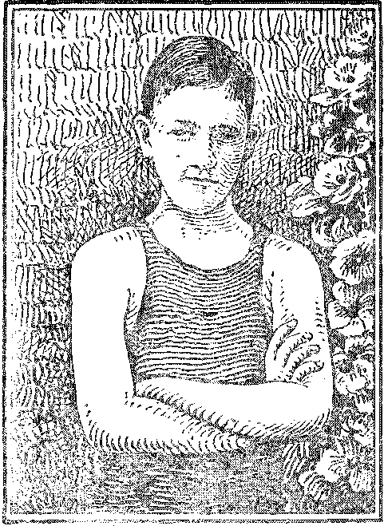
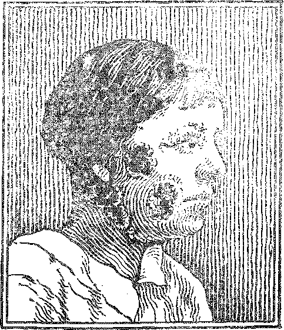

a Jowriial of fact
DYIjng

JHE LAST DAYS
FOUR DAYS
IN CARBONDALE
CLERGY-RIDDEN
SCOTLAND
NEV
W WORLD
BEGINNING
DOCTOR AICED’S
PRECLERICAL LIFE
V®1. IX Bi-Weekly No. 217
January 11, 1928
* Vs
VOR
a Jowriial of fact
DYIjng
JHE LAST DAYS
FOUR DAYS
IN CARBONDALE
CLERGY-RIDDEN
SCOTLAND
NEV
W WORLD
BEGINNING
DOCTOR AICED’S
PRECLERICAL LIFE
V®1. IX Bi-Weekly No. 217
January 11, 1928
5? a-eopy —• $ 100 a 'Ye ar Canada and Foreign Countries $ 1.50
»S9—■ - - rur^a:- .....—.
Social and Educational .
Miss Mayo Stirs India ................ 289
Five-f>ay Week Spreading ............... 241
Finance—Commerce—Transportation
Honk ! Honk I Look Out I ............... 231
National Utility Association’s Joke Book. ......... 231
Political—Domestic and Foreign •
Lord Arnold’s View of the House of Lobds ......... 229
Things in Britain ................ . 230
Lindbergh’s Father and the Federal Reserve. ........ 236
Bits of News .................... 238
Science and Invention
The Rivet Machine is Passing .............. 239
Radio Service in Siberia and India ............. 239
Home and Health
A Brief Lesson in Vaccination .... , .......... 237
. Religion and Philosophy .
Doctor Akjsd’s Pbeclemcal Existence ........... 227
Withdrawals From the Catholic Church ......... 230
Feu® Days in Carbondale ................ 232
The Man Nobody Knows .................. 234
Doctor Anderson’s Expense Account ........... 235
Bible Students in the German Press ........... 238
Strange Powers of the Demons ............. 241
Clergy-Ridden Scotland ................ 242
The Last Days .................... 243
When Soldikbs Become Peaceful FAmrur.s ......... 249
A Lima: Lost Child (Poem) ............... 252
A Wicked King and a Faithful Prophet .......... 253
Bible Questions and Answers .............. 254
Little Studies for Little People ............. 255
Published every other Wednesday at 117 Adams Street, Brooklyn, N. Y., I.'. S. A., ta WOODWORTH, IIUDGINGS & MARTIN ,
Copartners and Proprietors Address: lit Adams Street, Brooklyn, 7. U.S.A CLAYWyS J. WOODWORTH B . Editor ROBERT ; - MARTIN . Business Manages? WM. F. HUDGINff S . . Sec’y and Treas. '
Fives Cents a Copy—?1.00 A Year Make Remittances to THE G-OLDElf AGH Jiotice to Subscribers; We do not, as a rale, send a card of acknowledgment for a renewal or for a new subscription. A renewal blank (carrying notice of expiratl<m)l will ba sent with the journal one month before the subscription expires. Change c-f address, when requested, may be expected to appear on address label within one monta, Foreign Offices ; British . .... 34 Craven Terrace, Lancaster Gate, London W. 3 Canadian ......... 38-40 Irwin Avenue, Toronto, Ontario Australasian 495 Collins Street, Melbourne, Australis
South African ...... 6 LeUe Street, Cape Town, South Africa
Entered as second-class matter at Brooklyn, N. Y.„ under the Act of March 3, 1878
BroeMyiSp Nc Y» W©dn@sday9 1S28
Numbe? 217
THE Los Angeles Evening Express of October 8 contained the following advertisement : “All Souls’ Church. Dr. C. F. /Used. Doors open at 10: 30. Service at 11: 00. Belasco Theatre., Hill street at Eleventh. ‘The Tribal God, the cruel Jehovah-God, and the God whom Jesus taught us to call Father.” Pianist: Mrs. Earle T. Jenney.. Soloist: Otto Ploetz. Dr. Aked preaches over KNX at 5:15 P. M.”
The same paper contained the following leader: "Jehovah to be theme of Dr. Aked’s sermon. Tomorrow morning at the Belaseo Theatre Dr. Aked, pastor of All Souls’ Church, wall discuss ‘The Tribal God, the Cruel Jehovah God and the God Jesus Taught Us to Call Father.’ Dr. Aked says that ‘Jehovah is not God, and never wTas. The use of the word represents bad history, bad theology and bad religion. It is a crime against the younger generation to teach a Jehbvah religion.’ Dr. Aked will conduct the regular vesper service at 5:15 over KNX.”
In order to appreciate the weight of the foregoing statement it becomes expedient at this time to divulge for the first time the hitherto unpublished account of Dr. Aked’s preelercial existence. He was then in training for his present high estate but had not yet arrived at that proud eminence where he could put the degree I). D. after his name. However, he was even then making good progress toward his present lofty position, as the account shows.
The account opens with a conversation at the time of the annunciation. The angel Gabriel had just said to Mary: “Thou shalt conceive in thy womb, and bring forth a son, and shalt call his name Jesus. He shall be great, and shall be called the Son of the Most High: and Jehovah God shall give unto him the throne of his father David.”—-Luke 1: 31, 32.
At this critical moment up stepped the pastorelect of All Souls’ Church, of Los Angeles, and said to Gabriel: ‘I question that statement. Who is your authority for making remarks of that kind?’ And the angel looked oxi him with pity-and with shame and saidvT need only refer you to the statement of the sweet singer of Israel, in Psalm 132:11, where David says: “Jehovah hath sworn in truth unto David, he will not turn from it; Of the fruit of thy body will I set upon thy throne,” and also to the prophecy of Jeremiah 23:5, “Behold, the days come, saith Jehovah, that I will raise unto David a righteous Branch, and he shall reign as king and deal wise* ly, and shall execute judgment and justice in ths land.” ’
But at that time the light that is now shining so brilliantly in All Souls’ Church had not so much as heard that there ever were any such people as David and Jeremiah, so the conversation stopped short and young Aked went on with those lessons in the multiplication table which were subsequently to make him such a great man; lessons such as 3 X 1=1, etc.
■ First Lessons in Theology
fJIHE next place where (lie future luminary of All Souls’ Church appears in our history is out in the wilderness where young Aked and his professor are all set for the appearance of Jesus of Nazareth, after His baptism.. Part of this is in the Bible itself.
It seems that the professor got into an argument with Jesus, wanting him to leap off the temple, but Jesus said to’him, "It is written, Thou shalt not tempt Jehovah thy God.” Later the professor wanted Jesus to follow Aked’s example and fall down and worship him, but Jesus turned on him again and said, "It is written, Thou shalt worship Jehovah thy God, and him only shalt thou serve.”
The professor seemed quite upset by this last remark, and so he and Aked went off together to discuss matters. Aked said to the professor: ‘Prof., you know I reverence you and have agreed to always do just, as you tell me in all things, for I know that is the only way to separate the wool from the sheep in sufficient quantities to make the business pay, but why did you pay so much heed to those quotations T .
Thereupon the professor said, ‘Aked, you never read the book of Deuteronomy, did you?’ Aked said: ‘No/ Then the professor said: AVell, Aked, Jesus was quoting from Deuteronomy 6:16 and 13, and of course I knew that what he was saying is the truth, and so I could not make him any answer; hut I say to you now that you will never be a -true child of mine and a true follower of me until you know’ just enough about the Bible so that you can lie about it skilfully, artistically and with a. show7 of believing in it? Thereupon Aked got the right idea and resolved to read Deuteronomy at least. '
In the Primary School
IT WAS not long after this first lesson in the theological kindergarten before the sun now. shining in All Souls’ Church came into contact with Jesus himself. The first instance was where Jesus earn® to Nazareth and, to follow’ the Bible account, “entered, as his custom was, into the synagogue on. the sabbath day, and stood up to read. And there was delivered unto him the book of the prophet Isaiah. And he opened the book, and found the pla.ee where it was written, The spirit of Jehovah is upon me, because he hath anointed me to preach good tidings to the poor: he hath sent me to proclaim release to the captives, and recovering of sight to the blind, to set at liberty them that are bruised, to proclaim the acceptable year of Jehovah.”—Luke 4:16-19.
At this point' young Aked and some of the other roughnecks in the congregation went out on the front steps to criticize what Jesus had said, being hurried in their course by some severe denunciations w’hich are recorded in the next seven or eight verses, which they did not wish to listen to.
When they got outside the young divinity student said to his comrades, “What book was that he was reading from?’ and one of the roughnecks who had been brought up right but had gone astray said, ‘That was the book of Isaiah the prophet’ (Isaiah 61:1); and so Aked determined that he would need to read that book also if he w’as ever going to hold down a really first-class job in the year 1927. Subsequently the mob tried to kill Jesus as He came out, but failed in the attempt. See the story, Luke 4: 21-30.
The Next Less&n
HE next lesson was when he was in the Sadducee grade, once called the First Reader.
With some of his tutors he had gone along to see if they could not trip Jesus into some predicament concerning the doctrine of the resurrection. One of the tutor’s put up a pretty good question about a woman having seven husbands in. succession, the object of'the question being to try to impress the students in theology that the idea of a resurrection or any need of a resurrection is all bosh.
But to the dismay of Aked and the tutors Jesus dismissed all their quibblings with one breath and going straight to the root of ‘the matter said: “Now that the dead are raised, even Moses showed at the bush, when he calleth Jehovah the God of Abraham, and the God of Isaac, and the God of Jacob. For he is not a God of the flead, but of the living: for all. live unto him.”—Luke .20:37, 38.
When they got outside Aked said to one of the Sadducees: ‘What book was it that Jesus was quoting from that time?’ And the tutor looked at him and said: ‘Aked, did you never hear about Exodus? Well, that is a quotation from the third chapter and the sixth verse?
So the young luminary went to his room and got out his Bible and read thoughtfully Exodus 3:6,14 and on down to and including Exodus 6: 2,3, especially the last two verses, and said to himself: ‘If I am going to fight this Nazarene successfully I shall have to pay more attention to what is written in these old books whieli I have hitherto regarded as not worthy the attention of a man. of my skill in adding up one plus one plus one? .
Getting Wiser and Wiser
OW it happened that when the Pharisees heard that Jesus had put the Sadducees to silence ‘they got together; and Aked, having finished with the Sadducees, was now in the Pharisee class, once called class B, or The Second Beader. One of his teachers was a lawyer and this lawyer set out to trap Jesus and so, of course, Aked was along.
The lawyer asked Jesus a plain question: "Master, which is the great commandment in the law? Jesus said unto him, Thou shalt love Jehovah thy God with all thy heart, and with all thy soul, and with all thy mind. This is the first and great commandment.” (Matthew 22:36-38) "And the scribe said unto him, Of a truth, Master, thou hast ’well said that he is one: and there is none other but, he: and to love him with all the heart, and with all the understanding, and with all the strength, and to love his neighbor as himself, is much more than all whole burnt offerings and sacrifices. And when Jesus saw that he answered discreetly, he said unto him, Thou art not far from the kingdom of God. And no man after that durst ask him any question.’’—Mark 12:32-34, A. R. V. '
This conversation upset young Aked considerably ; for he remembered having seen these words of Jesus somewhere but could not just place them. So he went to the principal of the school and narrated the circumstances, and asked to be transferred to another class. The principal explained to him that Jesus was quoting from Deuteronomy 6:5, and told him again that he could never be a D. D. until he could repeat and deny everything in that book, and then granted his permission for transfer to another class under a teacher who would have more of his own spirit, the spirit of apostolic succession.
Getting Ready for His Degree
IT WAS not long after this until Jesus turned.
questioner. One time He came suddenly upon a number of Pharisee tutors among whom young Aked was taking final lessons and asked them pointedly: “What think ye of Christ? whose son is he? They say unto him, The son of David. He saith unto them, How then doth David in spirit call him Lord, saying, Jehovah said unto my Lord, Sit thou on my right hand, till I make thine enemies thy footstool? If David then call him Lord, how is he his son-? And no man was able to answer him a word; neither durst any man, from that day forth, ask any more questions.'” (Matthew 22:42-46) This was the last time that the future pastor of All Souls’ Church ever saw Jesus alive; but in this instance, as a budding young Pharisee, he had to admit that Jesus had quoted directly from Psalm 110:1 and by this time he knew that if he was ever to be a D. D. he should have at least a fighting knowledge of the Psalms.
After Jesus was dead young Aked came across the gospel according to John. Heading that one time he chanced upon John’s sad reflection that despite all the mighty works which Jesus performed, works of teaching, healing, opening blinded eyes and even raising the dead, “yet they believed apt on him; that the word of Isaiah the prophet might be fulfilled, which he* spake, . . . Who hath believed our report ? and to whom hath the arm of Jehovah been revealed?”—John 12: 37, 38.
This was Aked’s final examination. He knew Isaiah’s prophecy by this time and recognized John’s words as a quotation from Isaiah 53:1, but he had fully decided by this time that his own opinion was worth far more than the combined testimony of Moses, David, Isaiah, Jeremiah, Jesus of Nazareth, the angel Gabriel, Matthew', Mark, Luke or John. And then he suddenly remembered that he had already been granted his degree; and the degree is written in Jolin 8: 44, rvhere all wflio will may read it.
Thereupon Aked was ready for his charge and lie could and did publicly proclaim and advertise that “Jehovah is not God and never was”: and also, “The use of the word represents bad history, bad theology and bad religion”; and also that “it is a crime against the younger .generation to teach a Jehovah religion”. Also he could and did call Him “The Tribal God, the Cruel Jehovah God”, and Mr. Ploetz sang for him and Mrs. Jenney played at the piano and the professor of the seminary looked doivn upon the whole performance and smiled, and that is the end of the story.
P. S. Dr. Aked used to be in the East; but he wanted a warmer climate; and who, we ask, can deny that if anybody really deserves it he surely does? „
Lobd Arnold,one of the members of the Brit- never give labor a fair deal. The House of Lords ish House of Lords, but a broa.d-minded and is blind to the signs of the times. It is callous^ kind-hearted human being, said recently: “'I tell selfish, cynical, inconsistent, factious, obstrue-you as one within it that the House of Lords will- tive, unscrupulous and utterly reactionary.”
TN BRITAIN at the present time 3.8% of the * people have 82.78% of the national capital. This situation definitely faces the not distant ’day when 4.59% will own it all; and 95.41% will then not own anything. Capitalism is gradually making an absolute fool of itself in the eyes of all men and is showing its complete unworkability.
In Britain just now 5.5% of the people are in receipt of 44% of the national income. By the inexorable laws of logic this presages the time when 12.5% of the people will have all the national income, every bit of it, and the other 87.5% will be slaves. And then what?
In Britain at the present time 28 dukes, 33 marquises, 194 earls and 270 viscounts and. barons are literally rolling in wealth which they did not create. The national wealth of the country is increasing at the rate of $2,400,000,000 per . annum, sufficient, in twenty years to wipe out the national debt and leave a. handsome margin besides, but it will not go that way. It will go into the hands of the dukes, marquises, earls, viscounts and barons whose principal service to mankind is that they breathe and eat.
The miners of ' Britain today are working longer hours in order to live than are the miners of Germany, Holland, Czechoslovakia, Belgium or France. That is so that greater incomes may go to dukes, marquises, earls, viscounts and barons.
A LONDONER has tickled everybody in the city by equipping a cane with a motor-horn attachment and honking his way through traffic jams, where often the traffic cop, taken by surprise, has stopped everything else to let him proceed. The account of his experiences is intensely amusing. The sheer cheek of the thing made everybody good-natured and led to many unexpected occurrences. We quote from the account in the London Daily News:
In Jlolbom an old gentleman heard me honk, jumped, looked round, noticed nothing, and scowled accusingly at an innocent messenger boy on the opposite side of the street. s
My first crossing was Gray’s Inn road at Holborn Bars. There was a steady stream of traffic. I honked and walked sedately across, to the blank amazement of the policeman on traffic duty and the apoplectic speechlessness of a bus driver.
At the Kingsway traffic jam, I got behind the policeman as he blocked the stream of traffic. “Honk, honk honk.” The policeman turned and glared at the coallorry behind. “Got a date?” he asked the unwitting driver. Then he' spotted the horn. "All right, sir,” ha grinned and, stopping the crossing traffic, waved me on. The pedestrian was two up.
By the time I got as far as Tottenham Court road, I had entered fully into the spirit of the thing. I was the Compleat Pedestrian, the Apostle of the Eight of the Padhoofer. I honked my defiance to the world at large,
I shook off a following trail of messenger boys by jumping on a bus that took me to Piccadilly.
This is the circus where pedestrians are put through, their paces and taught to “jump to it.” That’s all wrong, and as I stood and watched the traffic rashing past oblivious to my querulous honking, I fretted and fumed. I stretched out an inquiring toe and drew it back hurriedly as a taxi flashed past in a cloud of bad language from the driver.
Something must be done. I took out a red handkerchief, tied it to my stick, honked, and waved my flag.
The torrent was stemmed. The buses drew up out of sheer amazement.
I waved on the crowd that was patiently waiting and, like the Israelites crossing the Red Sea, ushered my band of pilgrims across the road.
A DISPATCH from'Vienna, last September, reported that the movement of withdrawing from the Catholic Church continues, 2,462 persons having withdrawn at Vienna during the first ten days of September; 282 minors left the Church at the same time. The total number that withdrew from the Catholic Church during the foreparriof this month is 2,744 men, women and children. Some happy day they will all withdraw; and then will come the millennium.
THE National Utility Association, is made up of all the Big Business interests of the country, particularly those connected with the superpower trust. Its headquarters is in New York. It has just gotten out a neat 32-page joke book, bound with a nice cover.
The title is a great compliment to somebody. It reads:
G0V1BNMENT
FEDEBAL STATE LOCAL
FAILS IN INDUSTRY
To prove its contention that the Government is no good it quotes here and there from Herbert Hoover, Calvin Coolidge, William Howard Taft, Charles Evans Hughes, John W. Weeks, and others.
If we ask who are these men whom they cite as authority for their statements we find that they are prominent in the Government now or were at some time, in the past. Somebody is being complimented. Who is it?
If we ask the authors of this little book just whc is running this country, and if they tell the truth (which they will not and can not do) they will reply that Big Business is running it.
If we then ask who are the men that Big Business would choose to run the country, provided they could have their unrestricted choice in the . matter, what names would they give us? The very same names. Who is being complimented ?
If the men that Big Business have at Washington, and the men they wish to have at Washington, all agree that Big Business is unfitted to do, in the interest of the people, the tasks that have been put into their hands, whose fault is it? The answer is, Big Business.
The answer is Daugherty, Fall, Sinclair, Doheny, and a string of names that, if published, would fill The, Golden Age from cover to cover. Big Business is circulating its joke book for a reason. What is the reason?
Let us tell you what the reason is. Big Business is making so much money from its monopolization of -the earth and its bounties that it fg scared stiff for fear the people may want a reckoning, an accounting.
The burden of its song is: "The Government is no good. It can do nothing to relieve the common people of their burdens. AM they can do is to let us pick their bones until they drop through the rack.”
But suppose the people, instead of continuing to support the Government which Big Business says is no good, should turn against it, what then would Big Business do? It would turn its machine guns and poison gas and preachers and politicians and newspapers against them and accuse them of being Bolsheviks. ■
According to Big Business, the Government is no good w’hen it comes to doing anything for the people that will really help them, but when it comes to upholding the arms of Big Business in its fight with the common people, then it is some Holy Terror to be reckoned with. It is 0. TG then.
Its little book, attacking the Government for dishonesty, incompetence and inefficiency, is unfair from beginning to end. In one place it even boasts that whereas in Ontario the little fellows can buy electricity at low rates, in America they have to pay fancy prices and only the big companies get the favors.
If they had their way they would sell postage stamps to the big companies at about 25% of the price charged to the common people, and everything else in proportion. The Joke.Book gives us a pain. We are not Socialists. We can not be. It is not a solution of earth’s present distress.
The trouble lies too deep. The very hoggishness of Big Business is slowly driving the common people to despair? They see everything being’ gathered into the hands of a few big financial interests. We see it, too; and we know that the only solution is in Christ’s kingdom, which will grind the present unholy selfish system to powder. Let it come. We can not stop it and would not if we could. »
IN THE past three years great interest has been aroused among archaeologists, palaeontologists and anthropologists by the relies of past ages discovered in the Field of the Dead, at Glozel, near Vichy, France. Now comes M.
Dussaud, prominent archaeologist of Paris, and declares that the probabilities are that the whole thing is a fake, the work of schoolboys and others who have been making fun at the expense of a score of the world’s most learned mem
au
George Thomas, of Carbondale, Pa., is director of service work in his home class of Bible Students and sets the right example by getting out in the work himself, at every available opportunity. He recently had four interesting days. On the first day the leading paper of ■ his home city came out with a four-column scare head bearing on the front page the startling announcement "George Thomas Fined for Selling Books 'Without Peddler’s License” beneath "which was printed the following:
Acting ,4s Agent for the Sale of Publications of International Bible Students, He Sold Book io Army Officer's Wife. Officer Causes Arrest, Alleging That the Book Contains Seditious Statements —- Matter to Be laid Before Federal Authorities.
George Thomas, of Terrace street was fined this morning by Aiderman J. F. Atkinson of the Third ward for selling books in this city without first procuring a peddler’s license. City Solicitor J. E. Brennan is said to have advised that such an action, was permissable.
Thomas, who was selling a pamphlet said to have been written by Judge Rutherford for a religious publishing company, made the mistake of calling at the home of Sergeant Peterman, TJ. 8. A., on Maple avenue. Mrs. Peterman bought a book; and the sergeant read it carefully and found a paragraph which is alleged to have said that the government made recruiting places out of the churches during the late war. '
This statement, alleged to be seditious by Sergeant Peterman, so riled the army officer that he caused the arrest of Thomas. Constable James Farrell made the arrest and Thomas was held under bail for a hearing this morning.
The principals gathered at the office of the veteran aiderman this morning, and Thomas is alleged to have made a long speech which the alderman told The Leader contained statements aimed at the goverment and some American institutions. The alderman stated that this phase of the case was not a matter for his office but for that of the District Attorney of the county and the Federal, authorities. He fined Thomas, however, on. the charge of peddling without a license, which is a violation of a city ordinance.
' Sergeant Peterman attended the hearing this morning, and after the fining of Thomas it was stated that Constable Farrell left for the office of District Attorney Hayold Scragg with a copy of one of the books sold by Thomas. It is also understood that Sergeant Peterman is determined to obtain the government’s 'attitude on the sale of the book in question and will move for a showdown in that direction. Until further action is taken either by the district attorney or by the government, Thomas, with the payment of the fine imposed by ft® alderman, is freed from custody.
In addition to being fined, Thomas was held in bail to await the outcome of other charges against him £f any ar® made. He secured the bond and was released.
That was all for the first day, which was Saturday.. The Leader had no Sunday issue; but when its. Monday morning paper came out it contained the- following interesting letter from Mr. Thomas, which contains food for thought for all who fear God more than, they fear man:
GEORGE THOMAS
TELLS HIS SIDE
' . > OF THE STORY
Editor Leader, ,
Sir: I have been arrested for selling a 5-cent booklet, which contains a clear scriptural explanation of the great time of trouble which, is now upon the nations of the whole world, and which is going to be followed with the greatest time of happiness that the world has ever seen. Some of the newspapers surely did give me a good writeup, for which I am very thankful. ,
I am now thirty-three years of age and have been arrested for the first time in my life. I am one of the happiest men in the world today, because to be arrested for preaching the gospel of Christ’s glorious kingdom which, is about to be inaugurated is the greatest honor that can be bestowed upon any one on this earth. Now note why I am so happy: Jesus said, “Blessed are ye, when men shall revile you, and persecute you, and say all manner of evil against you falsely for my name’s sake. Rejoice, and be exceeding glad: for great is your reward in heaven; for so persecuted they the prophets which 'were before you.”—Matthew 5:11,13.
Some of my opponents are also very happy because of what they read in some of the newspapers. But the reports were false, and when they find out that they have been, deceived, they will probably gnaw their tongues.
The following newspaper reports .are false. ‘That I' paid the fine imposed upon me, That I am under a bond. That I am against the government, or that I sold seditious literature.’ ■ '
Alderman Atkinson said that the city solicitor instructed him to fine me $50.00 but that lie would let me off easy by letting me go for $25.00 and 1 said, “Nothing doing!” and he didn’t put me under a bond either, because he knows that the constitution of th® United States of America permits any one to exercise his or her religious, faith; and that is what I was doing.
Then Mr. Atkinson asked me if I believed in war, and I told him that I was a Christian, and that it is an unpardonable sin for a Christian to kill or to urge othera
to do so; and any one who claims exemption for himself and urges others into the trenches to suffer and die, and at the same time calls himself a servant of God, that man is a hypocrite and a coward, and this is what many clergymen did. They are the ones that are responsible for the world being filled with cripples, widows and orphans, and some of them know it, too; that is why they have so much love for.the Bible Students.
Then Mr. Atkinson said that I was a dangerous man.; that I was crazy and should be deported, because I was against the government. And I told him that I had nothing to say about the government, but that' I am exposing false religious teachers, and that I am ready to •die for a good cause if necessary.
Then I asked Soldier Peterman what he had against the book, and he said that it was against recruiting’ officers. Then I opened the -book and read from page 10 as follows: “The dishonest and faithless preachers of the various denominations, while claiming to follow Christ, urged the people into war and acted as war agents. Hypocritically they preached war from their pulpits. In many instances they were paid for so doing by the big financiers who desired war for private gain.” After Mr. Peterman saw that this quotation referred to the clergy and not to real recruiting officers at all, we walked up the street together and shook hands when we parted.
Little do the people know about the duties of a follower of Christ; or the insults which such must bear for trying to do as instructed, to wit: Preach the gospel (good news) of the kingdom for a witness (Matthew 24:14), for which Jesus said that we would be hated in all nations. (Matthew 10:22; 24:9) And he also said that we would be arrested, too. See Luke 21.: 24.
Great will be the day when the deceiver of this world is bound. (Revelation 20) Then the people will all know the truth.—Zephaniah 3: 8, 9.
I am very thankful to our great and loving Creator for this great and beautiful day, and may He greatly bless all who oppose me.
In conclusion I wish to say that this great message is being broadcast from 81 radio stations in the United States, and that it is printed in 46 languages, and that it is being distributed in all parts of the civilized world, GEORGE F. THOMAS, 56 Terrace Street, Carbondale, Pa.
’ This was not quite all. The next day’s issue of The Leader contained the following letter from a prominent military man of the city; and since that time you can not find a politician within fifty miles of Carbondale that will even so much as cheep. Thomas has received at least $100 worth of free advertising and the class is
making good use of their opportunities te spread the truth. ~ '
Editor of Leader.
Dear Sir: The undersigned was interested in & new® item published in your Saturday issue relative to th® arrest of Mr. George Thomas of Carbondale for selling a religious'paper alleged to contain statements of a se» ditious character. It seems the chief objector is an army recruiting sergeant on duty in this city, who probably didn’t take the time to read thoroughly the paper ia' question or, if he did so, was influenced by a kind bf religious intolerance and spirit of persecution which breathes of the dark ages and still pervades Christendom.
The writer has served in the U. S. Army Air Corps for ten years, the past two years having been in the Philippine Islands, during which time he has been actively engaged in the work of the Philippine Branch, International Bible Students Association, the organization publishing the religious pamphlet sold by Mr. Thomas, and has found nothing of a seditious nature i® these publications.
It. is a well-known fact that the I. B. S. A. lias bees a .source of annoyance to the clergy of all denominations because of the fact that the teachings of the clergy have been shown up in their true light, and, although the clergy are familiar with the truth of the I. B. S. A doctrines, they refuse to enlighten their flocks. They know they would lose their jobs and salaries if the people wer® enlightened as to the truth of the Bible, therefore they persist in keeping their flocks in ignorance. This is the reason they try to prevent the distribution of I. B. S. A. literature and, perhaps, the reason why I. B. S. A. representatives are refused a license to sell the publications in Carbondale—more religions intolerance.
Judge Rutherford, in his latest book. Deliverance, speaking of the persecution of Christians by the clergy during 'the war, says: “During the World War from 1914 to 1918 humble Christians residing in Germany were subjected to all manner of wicked persecutions and punishment because they declined to disobey God’s command: ‘Thon shalt not kill.’ In England, Canada and America like followers of Jesus Christ were beaten, thrown into prison, tarred and feathered, and some of them were killed; because they refused to take up arms against their fellow man and shed innocent blood. The war furnished an opportunity and an excuse for the clergy who as th.® representatives of Satan, hated these humble Christians and who induced the commercial and political powers to unjustly punish Christians.” Mr. Rutherford shows clearly in his writings just how the clergy used their churches and influence to enlist men in the army during the war. Many of the clergy now look back and lament because of their activities in this direction.
It seems rather a huge task the authorities of the city of Carbondale have undertaken when they say they can
prove io the go\eminent the seditious character of the I, B. S. A. publications. If they will investigate a lit tie, they will find the I. B. S. A. one of the strongest religious institutions in the world, with, branches in all countries and representatives in every known part of the earth. The I. B. S. A. radio broadcasting stations in the United States, particularly WBBR of New York, are
broadcasting their programs daily to millions of listeners; and the government finds no fault with them. ’
23 Archbald
Carbondale, Fa.
Very truly yours,
MILLARD KBTCHAM,
Technical Sergeant, Air Corps, U. S. Army,
TriROM a piece of advertising matter which has just come into our hands we clip the following : •
B5 Fifth Avenue, New York October, 1927. Dear Reader;
Jesus Christ “ths founder of modern business”?
Jesus a master of efficiency in organization, a born executive? '
.Jesus a sociable man, a cheerful, bright companion with a pat story on His lips—an outdoor man with clear eyes and hard muscles ?
Jesus wording the best advertisements ever written?
Yes, this is the Jesus Christ now being introduced to hundreds of thousands of business men and busy women by Bruce Barton. ’ '
Barron is himself a brilliant, successful young American business man as well as a writer. In his book “The Man Nobody Knows” he brings to us, in our daily work, a Jesus we never knew before, one who set examples for us, not in some ideal and impossible way but in our job, managing a bank or clerking, gelling automobiles, doing professional work, furnishing something of service.
We are hearing today much of “The Man Nobody Knows”. He is pictured as a great salesman, the founder of modern business, a society man, a reeanteur of good stories, an advertisement writer, a man of great magnetism, an ideal business executive, the organizer of the world’s greatest business.
Who do you suppose it is? Rockefeller? No. Jay Gould? No. Harriman? No. Schwab? No. Carnegie? No. Morgan? No. Commodore Vanderbilt? No. Who then? Reader, we are ashamed to put it in print. This man is supposed to be Jesus of Nazareth, the Savior of the world, the Son of the Living God.
If He came to this world to sell anything it was to sell Himself, to give His life a ransom for dying humanity. Does it seem likely that He was the founder of modem business when He had not where to lay His head? Can He be regarded as a society man when the question could . be asked by the higher-ups in His own day, Have any of the scribes or of the Pharisees believed on Him ?
Can it be possible that anybody would regard Jesus’ parables of the kingdom of God as so many good stories, told by Jesus so as to make Himself and His cause popular? Why, the mere telling of some of those parables caused His own followers to leave Him and caused the scribes and Pharisees to try to murder Him, and to finally succeed in their attempt.
Jesus a man of magnetism? The Scriptures do say of Him that he was a man. of sorrows and acquainted with grief, despite the sneering claims of the advertisement to the contrary, and they also ,say of Him that His own people received Him not and turned their faces from Him, as though He were smitten of God.
Jesus a great business executive, a pattern for the men who are today gobbling into their treasuries all the riches of the earth® The thing is so ridiculous and so presumptuous as not to be worth answering. Jesus was crucified between two thieves, it is true, but this is the first time we ever heard even Big Business insinuate that He was really one of their side partners.
Jesus the organizer of the world’s greatest business? It is true that Big Preachers and Big Evangelists have tried to make it a business, a business for lining their own pockets at the expense of the common people, a business of hiding truth and exploiting error, selling masses, scaring people into contributions to keep from falling into a fiery hell. But Jesus was not the founder of this religious business. The Devil was the real founder and is still the proprietor and general manager of the whole affair.
To the man that wrote “The Man Nobody Knows” Jesus is still the man he does not know; and it may be added that the number who really do know Him is limited indeed. Blessed are the eyes ..that see and the ears; that hear, but with most people they neither see with their eyes nor hear with their ears nor understand with their hearts.
They know about Jesus, many things about Him. some true and some erroneous, but nobody can ever know Jesus until., like Him, he ha® made a consecration to do the will of God, an4 like Him is engaged in faithfully laying dowa his life witnessing to the truth, in the face of its almost universal hatred by all mankind.
DOCTOR Anderson, formerly a Serantoman, now in the evangelistic business, has been putting on a show at Minersville, Pa. He was there three weeks. We just saw the expense account: Tabernacle, $2475.90: janitor, $140; stenographer, $90; electric power, $20.75; use of piano, $67.08; coal, 37.60; note paid to bank, $301.78; printing, $178; advertising, 70c; telephone, $1.40; party expense, $2251.39; total expense, $5563.97. >
We do not feel like complaining about the cost of putting up the tabernacle. We have no serious complaint about the size of janitor, power, coal and printing bills, stenographer hire, telephone and advertising bills; but it does look as if somebody had been stung on the piano hire and the “party expense”. Must have been some party, to get rid of all that in .three weeks.
But this was not all, for the same newspaper which gives us the above curiously interesting items says that besides all this:
All that Dr. and Mrs. Anderson received were the collections which were taken on Sunday. At the morning services this amounted to $1,000; afternoon $707.15; and evening $1107.34, making a total of $2814.49, which was presented to Dr. Anderson by Mr. Weist.
At the conclusion, of the afternoon services Mrs. Anderson was presented with, a purse from the business and professional women, and both Mr. Shank, the choir leader, and Mr. Randolph, the pianist, were presented yvii h a purse from the choir. „
As near as we can figure out Minersville has paid out about. $10,000 for putting on the worst land of show, one that never does any real good in the community, but generally adds a few more hypocrites than were already at hand. Even the Federal Council, of Churches has declared against this particular form of merchandising, and when they decry an ecclesiastical enterprise it must be objectionable indeed.
A gentleman, a Bible Student, who heard three of Anderson’s expensive sermons, sent him a letter of which the following is a copy:
Dr. G. W. Anderson, Crusader.
Dear Sir:
Nearing the end of your Crusade, you will wish t® know the sentiment of your hearers. '
With few exceptions, you will receive the acclaim and plaudits of those whom yon served, both sheep and goats,
I choose to be with the minority, even if alone, wh® ‘ were not carried off their feet with this giant delusion.
I heard three of your sermons, and even the first on® gave me your correct measure.
In your talk on people not acting natural, but aping others, you said it was no one’s business whether jot were an evolutionist or not. '
To me it is essential. If an Evolutionist, you have no business occupying a Christian pulpit or platform; and if not, you should not fear to state so, plainly. Evolution and Christian doctrine are incompatible.
The second sermon heard by me was “The Smashed Bottle”, your Prohibition sermon.
Much of what you said wa.s commendable, such as any order loving person would desire. Your arraignment of the dispensers of strong drink, the saloon-keepers and bootleggers was appropriate, quite strong. Do you. not come in the same category ?
What kind of drink have you served this community the past five weeks, to keep them stapified, absolutely drunk ?
I refer to the Revelatoris statement: ‘Babylon has made all nations drank with the wine of her fornication [false doctrine].’---Revelation 18: 3.
Also the prophet’s statement in harmony with th® above: “They are drunken, but not with wine; they stagger, but not with strong drink.”—Isaiah .29: 9.
“But they also Slave erred through wine, and through strong drink are out of the way: the priest and the prophet, have erred through strong drink, they are swallowed. up of. wine, they are out of the way through strong drink; they err in vision, they stumble in judgment.”—■ Isaiah 28: 7.
What kind of high-balls and eoek-tails have you thrust upon a credulous public? Here it is.
One evening your sermon or essay, selected from your stock in trade, was on eternal torture, and as customary, based on the parable of the “Rich Man and Lazarus”.
It was such a good concoction that even the secular editors of the Pottsville daily papers were favored with a draft from yottr golden cup. (Bev. 17:4) It vould have astonished me to learn, that you got safely over that spree that night without taking a. rap at the Truth and its servants. In your drunken stupor you could not control your spleen.
Every well informed man or woman in your audience well knew whom you meant when yon referred to a certain preacher of righteousness, now deceased'.
Then on. the night of the big splurge down Sunbury street, you said that you never discussed personalities or ridiculed another’s religion. How inconsistent i What hypocrisy I We know that your opposition to the Truth Is on. the lines of general principles mentioned by the Great Teacher, “The darkness hateth the light,”
“AH things that are reproved are made manifest by the light.” (Ephesians 5:13) Your immortality of the soul and hell-fire nonsense will not stand the light of present-day investigation.
In the third sermon I heard, on John 3:16, I had the pleasure or pain of hearing you trying to reconcile the love of God with His atrocious character pictured a few nights before. What a lame excuse you made! Then you favored them with another brand of drink, handed down from the dark ages, viz., the immortality of the soul. It mixes well with the eternal torment theory.
And it is said that mixed drinks produce the best jags; and the way you partly pulled off your coat to illustrate your point, made it appear that I was about to have part in a drunken brawl.
But the most charitable view I can take of your actions is that you over-iiylulged in wine, got soused, pickled,
I sympathize with the few pastors of this town who have joined in this movement, which they hope will increase their congregations and church revenues, but these pastors know ’ in reality that the Bible does not teach eternal torment and they have discarded the Bible anyway in favor of Higher Critical Infidelity, and you know it. Theirs is an unhappy and stultified position.
I sympathize still more with the common people that they should be betrayed by those in whom they repose confidence and whom they unwittingly pay for keeping them in the dark by taking from them the key of knowledge. “My people perish for the lack of knowledge.” '—Hosea 4: 6.
But still more. I sympathize with God, whose name is dishonored, whose Justice, Mercy, Wisdom, Love and Power are traduced, nay, vilified.
It is my thought that all shepherds false to their trust will be dismissed ignominiously, and that very soon. Shame on. you! Yours respectfully,
R. H. Bannek,
Minersville, Pa.
By Henry Vincent, in The Manufacturers Record.
HOW many about this time will connect our world hero’s name with that of his father, when an outstanding figure in Congressional debates, especially preceding the enactment of the Federal Reserve Act? This father was the minority member of the committee reporting out that measure, and his closing appeal contained a forecast of the operation of the Reserve Bill which reads now much as a prophecy, concerning which the general reader can better express himself today than at the time it was voiced.
In that memorable, though short address, Hon. Chas. A. Lindbergh is recorded as saying:
“This bill positively abolishes the United States Treasury. ... it proposes to move all the people’s money from the United States Treasury and place it in. the vaults of the banks, to be used by them for private gain. It violates every principle of popular demoeratio representative government, and every declaration of the Democratic party and platform pledges, from Thomas Jefferson down to the beginning of this Congress.” .
It remained for a man, who for 49 years had served as a Republican appointee in the Brooklyn custom-house, to follow the operation of the Reserve Act that he might disprove the prophecy quoted above, and what did he find? Before that act began to work, say April 7, 1917, the gold on hand in the United States Treasury, amounted to $2,240,531,589. Gold could be had for the asking from banks everywhere. By August 1, 1919, the gold in the United States Treasury had shrunk to $693,408,404, a loss of more than a billion and a half, and since that date no gold has been available in banks anywhere; it has entirely disappeared from public use, cannot be had without special engagement even for a Christmas present in small denominations.
How was it done ? By gathering up the yellowbacks and exchanging them for Federal Reserve notes, then exchanging these notes for gold at the sub-treasuries and carting the gold to vaults of the banks in the great centers, where it has since been undisputed property of the banks with which to play the markets, foreign as well as domestic, making it possible for these banks to make the prices of cotton, wheat, tobacco, live stock, manufactured products and real es-
>1. i‘i'L'u.;GCK. who has been debarred from school four years because be has NOT been vaccinated.
fate to suit their own caprice. Thus runs the explanation for more banks dosing since that date than in all previous history of the country, wiping out savings of millions of bank depositors and pouring them into the profits of the .overgrown financial institutions in the East. Not in. the entire history of our country have so many horfies been lost to their owners; so many suicides, murders, holdups and divorces, so many girls disappearing never to be heard of by parents or friends, and in general such lowering of moral standards in the community at large.
Our world hero's sire saw all this; warned his countrymen of what would follow in the operation of a single law. And remember, one of the closing acts of the last session was to make the charters of those banks perpetual.
Still we speculate in our simple-minded way if we should not raise more tobacco and less cot
ton, less wheat and corn, all the while forgetting that our Congress, for whose members we fight and vote to elect, have voted for plating this control of all prices, all our financial affairs, in the hands of twelve mtfney speculators, who compose the Federal Reserve Board, with no government restrictions worthy the mention, or requirements that government finances be operated in the interests of other than whom this twelve choose to favor. '
It should not be difficult today for our readers to form an opinion from their daily experience how well placed was the forecast made to his country by the senior Lindbergh. .
WE PRESENT here the picture of two
New Hampshire children, one of whom has been vaccinated and the other not. The child who was vaccinated is now helpless, confined'to her bed, going blind; and her face is disfigured beyond recognition.
In a vaccination case which was brought be-
VIVIAN ROSI, who has been debarred from school three years by disease atxi suffering because she WAS vaccinated.
'tore the Supreme Court of the United States it was held that “there is a sphere within which the individual may assert the supremacy of his ©wn will and rightfully dispute the authority of any human goveimmeftt, especially of any free government existing under a written constitution, to interfere with the exercise of that will* In other words, compulsory vaccination is nn« con.stituti.onal and therefore illegal
The pictures speak for themselves.
rpHE Daily News., of Hanover, Germany. • A second supplement, on Wednesday, September 21, 1927, contained the following about the Bible Students:
During recent years the Bible Students’ movement has gained a strong foothold in Germany. Those who know the Bible Students very probably came into contact with them by hearing some of their numerous discourses and by their continuous missionary work, extending to the remotest cities and villages.
The Bible Students own. at present a great number of radio stations all over the world; they are said to have at their disposal 52 radio stations in America, by which the people of all languages and races are being made familiar with the message of the Bible.
They are moreover operating in several cultured countries their own printing plants, that are organized on a large scale. One of these plants is in. -Brooklyn, where the headquarters of the Association are located. This plant produces daily up to 12,000 books; and the plant in Magdeburg, the headquarters of the Society for Germany, produces up to 7,000 volumes of religious subjectmatter. The works of Mr. Rutherford, now president "of the Association, have been distributed in various editions, aggregating thirty million copies.
The number of those taking’ part in the convention of the Bible Students, recently held in Berlin, varied between 10.000 and 12,000 visitors from Germany; foreign countries sent delegates from America, Hou-mania, Finland, Au str o-Hungary, Czechoslovakia, Poland and Switzerland. President Rutherford, of Brooklyn, also took part in the Berlin. Convention and gave a public discourse that was attended by 15,000 people. A like number is said to have waited in vain for admittance to the already overcrowded Palace of Sports. It is further stated that the Bible Students came to Berlin in ten special trains from various parts of German}'.
By their well-known harmony and by their zeal for their cause, that is common to them all, they acquainted the city of five millions with the aims of the Society and of the Bible, by a cleverly arranged house to house canvass on a Sunday forenoon. This bespeaks a sacrificial spirit that one at present is vainly looking for in other circles, but it also shows at the same time that the world has to reckon with the Bible Students.
Old Age Pensions in British Columbia
RITISII subjects seventy years old who have resided in Canada twenty years and in British Columbia five years are now granted pensions of a maximum of $240 -per year, exclusive of any property they may have, provided the property is not worth over $2,500. Both husband and wife are entitled to the pension, so that, between them, they may own a home worth $5,000 and receive an income of $480 per year.
Disorganized Markels in England
BRITISH fruit-grower in Cotswold, England, points out that cabbages for which the wholesalers gave him one-half pence each were retailed at three pence each; plums for which the wholesalers gave him one-half pence per pound were retailed at eight pence per pound; red currants for which the wholesalers gave him one and one-half pence per pound were retailed at six pence per pound. Naturally he thinks that something is rotten somewhere, and who can. blame hup for thinking so?
Awful Example Set by Chinese .
TWO wealthy Chinese living in Mexico have just notified the Mexican government of their desire that their immense lands be divided into a thousand farms and turned over to the poor Mexican peons, under expert government advice and assistance. The ranches are said to be ideally located. The two Chinese have retained small portions for themselves, with the ■understanding that the donated lands must be carefully worked and improved or revert to them again. What a terrible example these heathen Chinese set to us Christians 1
Recent Inventions in. Germany
THE Germans are always getting up something new. Now they have a mail box which automatically weighs letters and fixes the right amount of postage upon them. Also they now stun animals electrically before these are slaughtered, making the butcher business less objectionable. A new disinfectant, chlorthymol, is said to be the most effective disinfectant yet discovered. It, is rated 100 times more effective than corrosive sublimate.
The Rivet Machine is Passing
THE riveting machine has had its day. Electric welding is taking its place. It is predicted that in fifteen years all sky-scrapers, bridges, cars, barges, etc., will be welded. Worn or light weight structures will be strengthened on the spot by having plates welded to their sides. Welding is cheaper than riveting, there is nothing to work loose, the weight is less, and the drafting room work is greatly reduced. Welding has come to stay.
Radio Service in Siberia and India .
IN THE most matter-of-fact way we are told that radio service is fairly good all over Russia, Siberia and India. We cannot appreciate what this means. We are too near to it. But it is the Twentieth Century shaking hands with the dawn of civilization. It is the millennial morning displacing the ages of oppression, ignorance and misery that carry ns all Ilia way back to the Fall of Man. Radio, in the hands of the Lord, will yet bring the truth to all the world.
Paraguay and the United States ~
IT SEEMS odd to think of Paraguay as more progressive than the United States, yet little Paraguay has granted to the Mennonites complete and perpetual immunity from military duty and exemption from participation in a war, even as non-combatants; and the .Mennonites are leaving the United States because this great country is afraid to grant them the same concessions. The Mennonites are an industrious people, a desirable people, but they are peaceful; if one hundred thousand of them leave America it will be a great loss to the country; we have other hundreds of thousands, ready to murder on the slightest provocation, that we could better spare.
The Shark Suddenly Becomes Valuable rpiIANKS to chemistry, the shark, hitherto a . -L nuisance, has-become one of the most valuable creatures of the sea. From it are now made leather shoes that can hardly be worn out, silk stockings, and gowns that are almost indestructible, liver oil w’hich is said to be better than cod liver oil, insulin, glue, paint, manure and food. It is said that more than 300 tons of shark flesh are sold in England every day under the deceptive title of rock salmon. It is also claimed that there are more sharks in the sea today than there are cows on the land. .
A Wise St. Louis Merchant
LOOKING to the future, a wise St. Louis merchant, David May, president of the May
Stern Co., cancelled the debts of all persons ow- ■ ing his concern whose goods were destroyed in the recent disaster; moreover, all such persons may refurnish their homes on credit and without the usual down payment. This is in itself an advertisement of incalculable value. ' '
Mm Mayo Stirs India
Miss Katherine Mayo, in her book “Mother
India”, has -written such a relentless expose of the suffering of the little girl wives of India that she has stirred that country from end to end. Many of these little girls, married at nine or ten years of age, bear weak and sickly children and leave the young mother so weak that she herself often dies. As a result of the circulation of the book, the Maharajah of Kashmir has decreed that the minimum age of marriage of girls shall be raised to fourteen. This is considered a great reform.
Secretary Davis” View of the Future
James J. Davis, Secretary of Labor, says “As
I look into the future, far beyond this occasional distress of the present, I see a world made better by the very machines invented today. I see the machine becoming the real slave of man that it was meant to be. I see it lengthening the useful lives of men. Today we are scrapping men at the age of 45 or 50 because we think their skill is. slipping. Tomorrow the machine will supply the skill, and a man of seventy may operate it as -well as one of twenty. Machinery has built, our enormous cities of today. Tomorrow will see the highways broadened for better traf~
fic, and the air thickened with new methods of transportation. When that has come, this intense centralization of industry will be unnecessary. The worker and the farmer will Jive side by side, to the advantage and better understanding of both. Machinery will do the work, and men will have time to live. As they have time to live, they will cultivate more and more the things worth living for.” .
A Brave Attorney General
Charles C. McCall, Attorney General of the
State of Alabama, is a brave man. Having investigated the floggings in four counties of the state, and having become convinced that these illegal and cowardly outrages were committed, plotted and planned by the leaders of the Ku Klux Klan of his state, McCall, though‘himself a member of the Klan, and professing adherence to its publicly announced principles, has withdrawn from it, declaring that he would no longer follow under the leadership of men who connived at and resorted to such atrocities. Bully for McCall i We do not wish and will not have in this country anarchy of any sort, no matter who wants it.
New York’s New Metropolitan Zone
THE speeding up of transportation facilities within the past few years, and perhaps particularly the opening of the tunnel for vehicular traffic under the Hudson River, has led to the creation of a new Metropolitan Zone or District with New York City as its center. This zone, which takes in all the most thickly built up area within forty miles of the City Hall, is estimated to have a population of 9,500,000, or more than the combined populations of the six next largest cities in the United States.
Details of the Holland Tunnel
THE $48,000,000 vehicular tunnel connecting
New York and New Jersey is 9,250 feet in length and took seven years to build. The top of the tunnel is 72 feet below water. Cars to the number of 3,800 can pass through the tunnel in both directions in one hour. The air in the tunnel is chemically purer than the air in any street in New York. Two hundred and eight policemen guard it day and night. Sixteen ticket booths are necessary to accommodate the traffic. Cars to the number of 136,303 passed through the tunnel in the first six days and paid $71,076 in tolls.
Congestion on Forty-Second Street ■
FT1HE congestion on Forty-Second street, New
York, is now so great that the normal time of a pedestrian from the Grand Central Station to Times Square is 22 minutes, whereas it should be covered in ten minutes. Twelve minutes is-lost at the street crossings. At-Fifth’ Avenue 800 pedestrians and 200 motorists are halted for two-minute periods twenty times an hour. A pedestrian subway is proposed, and is evidently necessary.
New York’s Errand Boys
AN EXAMINATION of two thousand of New
York’s errand boys between, the ages of 14 and 17 disclosed that 600 of them were underweight, Half of them were in need of dental work, a fourth of them had impaired vision, 154 had heart defects of various kinds and 67 had diseases of the ear. More than one-third were classed as undernourished.
Rapid Increase of Millionaires '
LAST year, in the United States, 1113 corporations earned 65% of the corporation profits made in the country. These corporations are the real money makers of the country. Their operation has resulted in increasing the number of millionaires in the United States from a total of 7,509 in 1914 to a total of 30,517 in 1927.
Palestine’s Credit High
TpRIENDS of Palestine are interested in the J- announcement that the country is in such good condition that when recently a loan was desired, carrying interest at 5%, the bonds sold at 105, showing that in the eyes of bankers the country is as strong financially as any in Europe, The bonds are guaranteed by the Bank of England.
Brisbane on the Failure of Capitalism
COMMENTING on the fact that in Lansing the automobile workers are irreguarly idle 55 working days out of 100, Arthur Brisbane urges capitalists to find a way to keep these workmen in better humor by removing just causes of discontent. He says in part: "The man forced to worry, compelled to be idle against his will 55 days out of every 100, is bitterly discontented and angry or he is a fool. 'Even high finance, with an average intelligence, outside the counting-room, of a twelve-year-old child, ought to realize that. Today's system makes men happier, safer, more prosperous in the mass than they have ever been before. But that, is not enough. If those on top want to stay on top, they should dread discontent among workers as they dread salt water in their oil wells.”
Meaning of Huge Foreign Loans
COMMENTING on the huge loans now being made by American bankers to foreign enterprises in all-parts of the earth, Lincoln Phifer, newspaper correspondent, says: “Except for these foreign loans, which keep money moving, business here would be deader than a door-nail. The banks of America would be forced to close in on the property on which they hold mortgage, and we would Ise in the midst of the worst panic the nation ever knew. America is saved temporarily, because other peoples are now being tied up in bonds just as America is tied up already. When the crash does come it will be world-wide in nature and reduce earth to a feudalistic condition once more.”
Five-Day Week Spreading
THE American Federation of Labor estimates that 100,000 American workers were enjoying the five-day work-week in 1926 and that a considerable addition to this number was made in 1927. The President of the Federation says: “It is surprising how swiftly the reform is being extended into the building trades, automobile manufacturing, metal trades and others.”
A Good Move on Pistol Permits
NEW York City is cutting its pistol permits from 40,000 to 20,000, is finger-printing everybody entrusted with a permit; and those who have had them and lose them must present the evidence as to what has become of their old weapons. All right-thinking people will hail this as a step in the right direction.
The Youngest Contender for a Medal
VERY likely the Carnegie medal for personal heroism will have to be given to a four-year-old baby in Albany, Leonard Lipschitz by name. Leonard’s chum, a baby of three, fell into a pool, but Leonard stretched out over it, seized hirn by the collar and drew him safely back to land. The child was unconscious when rescued but revived in forty minutes.
Kansas City's Prayer Dance. '
KANSAS CITY has started something new.
One of the churches has hooked up with an armory; and now on Sunday evenings the young people are locked in at 7:45 and let out at 10: 30 and in the meantime have a song service, with a popular orchestra for accompaniment and popular songs along with the hymns. Then they have an hour and a half of dancing, concluding with three-quarters of an hour of religious forms and ceremonies, prayers, an address, etc. Only a few auxiliaries are needed to make this thing complete, but we would rather leave it to the imagination than to mention them. How the Devil must laugh at it all; and he has reason to do so. But nowadays it is anything that will bring in the shekels; no matter what.
Left for the Wrong Reason
"Dishop Babnes of the Church of England was recently denounced in St. Paul’s Cathedral, London, by a fellow clergyman who demanded his trial for heresy. But, oddly enough, the thing for which he was denounced was not his unscrip-tural statement that man has never fallen but is an animal slowly gaining spiritual understanding, but he was denounced for his wholly logical and sensible repudiation of the idea that any priest can, by using the right words and acts, convert a piece of bread into the real presence of Christ. The clergyman who denounced the Bishop rose with his following and left the cathedral. It was all right for him to leave, but he left for the wrong reason.
Strange Powers of the Demons
MOSLEM priests, by appeals to the demons, ha ve often shown their ability to have parts of their bodies pierced by swords, with no blood flowing and no injurious results following. This is due to the same mysterious powers by which living cells are drawn from the body of a medium in the form of what is called ectoplasm. A demonstration of these occult powers was recently given in Los Angcdes, when a man allowed a hat pin to be thrust through his tongue and another through, the flesh of his ne®k, 'without pain and without loss of blood. The same man also lay naked on the points of a bed o£ spikes while a 200-pomid man stood on his chest. After the performance he arose unscratched.
ON SEPTEMBER 22, 1927, W. 0,- Warden, Secretary of the Glasgow Branch of the International Bible Students Association, wrote the following self-explanatory letter to’the Glasgow Herald. After the lapse of two days (giving ample time for thought on the part of any clerical friends of the Herald who might, have seen it in the meantime), it was published, but the Herald omitted the part which we have set in italics.
Tn today’s issue of the “Herald” you published a communication from the British Broadcasting Company in explanation of their refusal to broadcast Judge Rutherford’s lecture recently delivered in the St. Andrews Hall.
May I be permitted to state that the petition which was presented on the 22nd July to the B. B. C., in this eonnoction was signed by over 26,000 license-holders resident in Scotland who desired to have the opportunity of hearing this lecture. The letter from Mr. D. Cleghorn Thomson gives two main reasons why the request of this large body of license-holders was refused, viz.,
(1) That the services for the day in question had already been arranged, and that no alternation could be made without reference to an Advisory Committee which would not meet till October.
(2) That the broadcast suggested must be considered controversial.
The first reason is not very convincing, in view of the fact that no interference would have resulted to any other service, as the lecture in question was at 6:30 p. m. and no other item was broadcast by any of the Scottish Stations between that time and 8 p. m. Also, is it reasonable that the request of 26,000 license-holders should be turned down merely because an Advisory Committee does not meet for three months?
The ease presented by the B. B. C. on the subject of controversial matter is also weak indeed. They decided that the lecture in question would be considered controversial without even making enquiry " regarding the subject matter of Judge Rutherford’s address. More weight might have been attacked to the claim of “controversial matter” had not the B. B. C. already broadcast lectures on Evolution, Miracles and Prohibition, all of which would be considered controversial by many listeners.
A lecture recently delivered by Judge Rutherford was broadcast simultaneously by no less than 53 stations in Canada and U. S. A. He has also spoken over the wireless in Spain, a country which is not conspicuous in the matter of religious liberty. Is not the real reason why he has not been broadcast in this country because the Adr visory Committee in question is largely composed of clergymen, who will only let the people hear what is in accordance with their own ideas?
Judge Rutherford has a real message for the people. Why should the people not have an opportunity of hearing it?
Of course one can only surmise why the Herald omitted the part which we have printed in italics, but on October 7 it devoted a full column to an account of the meeting of the “Advisory Committee” and we find in the account two gems which we believe all of our readers who still know how to laugh can hardly fail to enjoy. After this nobody ought ever to question that the unholy alliance of Big Preachers, Big Plutocrats and Big Politicians is a reality; in Scotland at least:
The luncheon was given in the Grosvenor Restaurant by the officials of the B. B. G. to the members of the Northern Area Religious Advisory Council. Sir John G. W. Reith, director-general of the Corporation, presided, and among those present were the Right Rev, Dr. Norman Maclean, Moderator of the General Assembly of the Church of Scotland; the Right Rev. Dr. Weatherhead, Moderator of the United Free Church of Scotland; the Very Rev. Dr. Donald Fraser; the Rev. Professor Main, D. D., Glasgow University, chairman of ther-Ad-visory Council; and the Right Rev. Bishop 'Reid, D. I)., of the Diocese of Glasgow and Galloway of the Episcopal Church in Scotland.
Dr. Norman Maclean assured the chairman' that the Churches did fully realize the great opportunity placed in their hands by vrireless. Nobody who had ever broadcast" and read the sheaves of letters could fail to realize how great an instrument had been placed in the hands of the Church. Tie had listened to broadcasting services, and, shutting his eyes and listening, he could not say whether the preacher was a Presbyterian, Baptist, or of any other denomination. All had the same message. The greatest instrument for uniting the Churches, in his mind, was the broadcasting of services all over the world. People listened in to the same message, and how could they justify their separation from one another? This was a world of wonder and mystery in which they found themselves. He did not know anything which would stir people up to think regarding life and the serious things of life comparable to the broadcast. At the beginning they little knew that this new instrument was going to fall into the hands of a son of a Moderator of the United Free Church. It was one "of the wonders of Providence that Sir John should be controlling the greatest instrument for the building up of the Kingdom of God. .
“But woe unto you, scribes and Pharisees, hypocrites! ye neither go in yourselves, neither suffer ye them that for ye shut up the kingdom of heaven against men: for are entering to go in.”—Matthew -23:13.
’ 242
[Broadcast from Station WBBR, New York, by Judge Rutherford.]
WHEN a person asks a Bible question, that is some evidence that the person is interested in the Bible. The presiimption must also be indulged that he desires the answer to be based upon the Bible. An answer which is confined wholly to man’s wisdom is of no value; because it is written in the Bible that the wi sdom of man is foolishness with God.
The distinguished president of the organization known as the National Federal Council of Churches of Christ in America, regularly holds question meetings and invites the public to propound Bible questions. Among the many questions recently submitted was one concerning the last days and the coming of the Lord. Dr/ Cadman gave his answer to the question, and the public press carried a full report thereof the day following. Evidently some o.f the public are not entirely satisfied with his answer. He cited no scripture in support of it. I have been, requested to give what I understand to be the Bible answer to the question propounded and to use the radio in connection therewith. This morning I shall endeavor so to do.
I would like all to understand that I have no controversy with Dr. Cadman, the distinguished president of the Church Federation. I do take sharp issue with him upon the question propounded. The only purpose in discussing the matter is to enable the interested to arrive at a proper and satisfactory conclusion. I shall submit what I consider to be the Scriptural answer to the question, and then let each one of my audience decide for himself whether he'considers it to be right. The question propounded and the answer given by Dr. Cadman reads:
Question : Do you believe we are living in the last days; and “have we sufficient signs telling us that the Lord’s coming is near, even at the doors ?
Answer: No; the signs are all the other way. We do not want the Lord here yet. What we want is a world fit for Him to come to. Instead of gazing into the sky, asking when He shall come, we ought to get busy and clean 'up the earth in preparation for His arrival. . . . Moreover, this earth is quite a juvenile planet. Let us robe it with God’s glory in man’s moral achievements. Then Christ can come.
Last Days
HOO DETERMINE whether or not we are liv-•L ing in the last days we must ascertain first what is the meaning of the term “last days”. The words “last days” appear a number of times in the Bible. The term has reference to the latter part of the Gentiles Times, and to the end of the world of which Satan is god, and to the second coming of Christ. The word day or days, as used in the Scriptures, does not mean a twenty-four-hour day or several such days. It means a fixed period of time. The Scriptures speak of the days of Noah, and Jesus used the term' in coimection with His second coming. Noah was many years in building the ark and in telling the people of the end of that world. Bible prophecy focuses on the last days, at which time fulfilment is to be expected.
Prophecy means the foretelling of events that will transpire,’ and prophecy comes only from God, written by holy men of old who were moved upon by God’s spirit to write. The prophets of G-od foretold the last days, and all devout Jews were looking for that time when Jesus came to earth. The disciples of Jesus had been taught concerning the end of the world and the last days and the setting up of the Messianic kingdom. They were keenly interested therein. For this reason they approached Jesus privately and propounded to Him this question (Matthew 2-1: 3): “Tell us, when shall these things be? and what shall be the sign of thy coming, and of the end of the world?”
In answer to that question, Jesus said nothing about gazing into the sky and asking when He shall come, as Dr. Cadman puts it. The distinguished gentleman does not find any authority in the Scriptures for' any one to gaze into the sky and ask when the Lord is coming. Nor should we expect that Jesus would so advise. The question was propounded by men, and naturally we should expect Jesus to tell those men of something that men would be able to understand as signs or proofs of the end of the world and of His second coming. He did tell them of the things -that men would observe in the' last days and such things as men are capable of understanding. When we examine His answer in the light of the physical facts showing fulfilment of prophecy, any one can understand that answer.
World
IRST may we get some side-lights on the end of the world, because that period of time synchronizes with the last days. Satan has been the god of this, world since its foundation. The one exception, was the nation of Israel. With that .nation God made a covenant, and they were His chosen people until they repeatedly violated that covenant. Then God permitted the Israelites to be taken captive; and' the Gentiles or non-Jews were permitted a period of time to rule the world without interference. There Satan became the god of the whole world. When Jesus was here, lie recognized Satan as the ruler of this world.
’ ’ Tfis written (Matthew 4: 8,9) that the Devil made claim before Jesus that all the kingdoms of the world belonged to him, and offered to give them to Jesus upon certain conditions. Jesus did not deny his rulership at that time. Later He said to His disciples: "The prince of this world shall'be. east out” (John 12:31) As further evidence that Jesus considered that Satan is Ilie god of this world, when He stood before Pilate He said (John 18: 36): "My kingdom is not of this world: if my kingdom were of this world, then would my servants fight, that I should not be delivered to the Jews: but now’ is my kingdom not from hence.” By this we must understand that while Jesus was appointed King, the time was not then due for Him to take possession, but He must wait a long time until the setting up of Uis kingdom.
Satan has always been the enemy of God and Christ. When Jesus was resurrected and ascended on high, God said to Him: “Sit thou at my right hand, until I make thine enemies thy footstool.” (Psalm 110:1) In other words, T)o not interfere with Satan’s rulership until the time comes to put him down.’ It would mean, then, that when the time arrives ouster proceedings would be begun. It also follows that ouster proceedings against the Devil would not begin until the second coining of the Lord.
The Apostle Paul, in plain phrase in 2 Corinthians 4: 3, 4, declares that Satan is the god of this world. Satan is a spirit being,-therefore invisible, but exercises his evil power over the nations and peoples of earth, and for that reason is called god or ruler. World means the peoples of earth organized into forms of government under the supervision of an invisible ruler, who for long has been Satan. The last days, therefore, would have reference to that period of time in which the Lord Jesus begins operations against Satan to oust him and to establish His kingdom.
Hois Come * '
ESUS did not say that He would come and exhibit His body to the peoples of earth.
is a spirit, and no human eye can see a spirit. In due time, however, He wall exhibit His power, that all human eyes may see or discern Hi® presence. He used the rising of the sun as an illustration of the manner of His coming. He said: “As it cometh out of the east and shineth unto the west, so shall the coming of the Son of man-be.” (Matthew 24: 27) The power of Jesus is without limitation; and He can exercise that power from His heavenly throne just as well as if He is at the earth.
From the time Jesus ascended into heaven, and for many centuries, great darkness has covered the earth. In recent years there have come to light great inventions, and the rights of man have been contended for more earnestly than ever before. This is due to greater light shining from the Lord. God’s prophet Daniel wrote in 12:4,12: "But thou, 0 Daniel, shut up the words, and seal the book, even to the time of the end; many shall run to and fro, and knowledge shall be increased. . . . And he said, Go thy way, Daniel; for the words are closed up and sealed till the time of the end. Many shall bo purified, and made white, and tried; but the wicked shall do wickedly: and none of the wicked shall understand; but the wise shall understand.”
In modern times we have marked the great increase of knowledge and of rapid transit described by Daniel as evidences of the last days. God foretold, however, in this same prophecy that some would understand, while, others ■would not understand. The facts show that this is true. ■Many pretend to represent the Lord, and yet have no understanding of His prophecies. The wicked within, the meaning of this scripture are not those who resort to the grosser crimes, but those who go contrary.to the expressed Word of God. A man may have the highest standing in the community, and yet in God’s sight be wicked; and if so he will not understand and appreciate the fulfilment of God’s prophecy.
At midnight the sun is the same distance from the earth that it is at dawn. With the coming of dawn we say, “The sun is coming up; day is at hand.” Jesus said that so it shall be at His second coming. He will come in a time of great darkness, and come when darkness is on the world. He said He wmuld come as a thief in the sight, which means at a time when practically all the people would be ignorant of what is coming to pass.
Signs
HE word “signs”, within the meaning of the scripture, has reference to proof. Now if the coming of the Lord is sudden and He is to exhibit Himself to all human, eyes, then why should it be necessary to have any signs or proof whatsoever? You do not need to have proof that a man is near when you are looking squarely at him. Manifestly then the word signs or proof means what is the evidence that we are living In the last days and the time when the Lord is manifesting His power. Jesus answered. Before examining the answer given by Him, reference is made to seme prophecy. The last king of Israel was dethroned B. C. 606. God had foretold that the Gentile Times should be a period of seven symbolic times, or 2520 years. That period of time necessarily must end in 1914, because 606 B. C. plus 1914 A. D. make 2520 years. If this calculation is correct, some proof should appear- in 1914, showing the end of the -world and the coming of the Lord.
Now mark the answer of Jesus. He said: “Nation shall rise against nation, and kingdom against kingdom: and there shall be famines, and pestilences, and earthquakes, in divers places. All these are the beginning of sorrows.” (Matthew- 24: 7, 8) Exactly on time in 1914 the [World War began. There never was a world war before in which nation rose against nation, and every element of the nations involved was required to do its bit. Then followed the great famines in various parts of the earth, and pestilences, such as the Spanish flu, which killed more people- than did the World War. There have been more earthquakes since 1914 than, ever before. But Jesus says these things shall mark the beginning of the sorrows upon the Devil’s world. Every man on earth that is able to reason has seen these proofs or signs. If this is the beginning, it means there -must be something more to follow’.
Jesus further said that then His true followers would be persecuted, afflicted and killed and hated of all nations for Hjs name’s sake. During the World War all true Christians, whether ©n the German side or among the English and their allies, were hated. Every man who had conscientious scruples, based upon the Scriptures, against killing his fellow man was not only hated but persecuted, beaten, thrown, into prison; and a number of them were killed.
As a f urther sign or evidence Jesus said that the Jews would be trodden down until the Gentile Times should end, and that then God’s favor would begin to.bring them back into their homeland.. Every one knows that it -was in 19.18 that the movement to reestablish the Jews in Palestine took on a great impetus. The Jews are rebuilding Palestine. This is a strong.sigh,.....or"
proof.
As another sign, or proof, Jesus said (Luke 21: 25, 26): “Upon earth [will be] distress of nations, with perplexity; the sea and the waves roaring: men’s hearts failing them for fear, and for looking after those things which are coming on the earth.” Surely this sign is today seen by every one. All the nations are in fear and trepidation. The conference of the League of "Nations now in session at Geneva, Switzerland, is manifesting fear and perplexity pand the peoples of earth are disturbed and in distress.
The World War suddenly stopped in 1918. And for what reason? The reason is given by the Lord Jesus that thereafter the gospel of the kingdom must be preached to the nations as a ■witness. Gospel means good news. The good news, then, as proven by these physical facts showing that we are in the last days, must from that time forward be proclaimed to the nations as a witness. Is there anybody doing this ? The answer is, Yes. The Bible Students are proclaiming this message throughout the world in the various languages of the nations and peoples. They are claiming no credit for it, but are rejoicing in the privilege. The people are not hearing anything from the preachers about the second coming of the Lord. On the other hand, the clergy are opposing it. Jesus declared that this witness must’ be given, not for the purpose of converting the world, but to serve notice on .the W’orKl before the great time of trouble which shall follow. All the nations are fearful of greater trouble,-and for that reason they are preparing for war.
The fulfilment of the prophetic utterances of Jesus, particularly since 1914, furnishes conclusive proof that we are in the last days. Why do men who claim to be preachers of the gospel of Christ, and who claim to be in the ehureh of
Christ, fail io tell the people about these signs, or evidences?
Scoffers '
OW I call your attention to some testimony that answers my question last propounded.
The Apostle Peter under inspiration was writing of the last days and the second coming of the Lord. He said (2 Peter 3:3-5): "Knowing this first, that there shall come in the last days ...scoffers, walking after their own desires, and saying, Where is the proof of his coming?” When Dr. Cadman says that there are no signs of Jesus’ coming but that all proof is the other way, is he not fulfilling this very prophecy of the Apostle Peter ? Peter then adds: “For this they willingly are ignorant of.” Of course the distinguished gentleman is not an ignorant man. On the contrary he is a very highly educated man. It must be admitted, however, that he does not know of this scripture; or else he is deliberately ignorant of it and is willingly keeping it from the people.
But, you say, why would this appear in the Scriptures? I answer that the apostle wrote under inspiration and wrote prophetically. God foresaw that in this time of the last days there would be men walking after their own desires and denying the presence of the Lord. Does Dr. Cadman desire the Lord’s second coming? He answers: “We do not want the Lord here yet.” His desire is thus expressed. Surely any one that truly loves the Lord would be anxious to see Him at any time!
Perilous Times
rpHE Apostle Paul also wrote under inspira-J- tion and spoke of the last days; and these are his words in 2 Timothy 3:1, 2: “This know also, that in the last days perilous times shall come. For men shall be lovers of their own selves, covetous, boasters, proud, blasphemers, disobedient to parents, unthankful, unholy.” Can any one deny that we are now in perilous times ? You have but to look at the newspapers to see that their columns are full of all kinds of crime and no one is entirely safe. Never has there been . stieh an expression of selfishness amongst men. They are lovers of their own selves, covetous, and boasters, and proud. The apostle continues: “Traitors, heady, highminded, lovers of pleasures more than lovers of God: having a form of godliness, but denying the power thereof t from such turn away.”
Mark the words, “Having a form of godliness,, but denying the power thereof.” I submit to my audience that the church systems today go through a form of godliness and openly deny God’s power. They deny the creation of man as perfect, deny his fall, deny the blood of Jesus as the redemptive price of man, and deny His kingdom. This is a strong proof that w® are in the last days.
Blasphemers
E IT noted that Paul says that another evidence that we are in the last days is that
there will be blasphemers. One who blasphemes is one who assumes that men can do what God alone can do. To blaspheme means an irreverent handling of God’s Word, and a disregard of what Jehovah will do. If we find then that the Federation of Churches, and particularly its clergy, are assuming that they can do what God alone can. do, that comes clearly within the meaning of the apostle’s words. ■
In this connection please note again the words of Dr. Cadman in answer to the question: “We do not want' the Lord here yet What we want is a world fit for Him to come to. . . . We ought to get busy and clean up the earth in preparation for His arrival.” Does any one suppose for a moment that the clergy and all the members of their flocks can.clean up this wicked world? They told us that the World War would make the world free, but mark the wickedness in high places that continues. As an illustration, a prohibition law was passed; and yet the men who are supposed to enforce the prohibition law violate it more than do any other class of people in the land. Officials are elected to represent th® interests of the people, and these are guilty of bribery and other wrongful acts in violation of the people’s rights. It is unnecessary for me to relate the many evidences showing the wickedness in this world, which is impossible for any class of men to completely eradicate from the world.
I quote further from Dr. Cadman in answer to the question: “This earth is quite a juvenile planet. Let us robe it with God’s glory in man’s moral achievements. Then Christ can come.” With all due deference to this distinguished gentleman I must insist that this is a grossly
1928 The QQ£[)E^ . 217
blasphemous statement; and now I submit the proof to show that it is; and if so, then it comes clearly within the words of the Apostle Paul with reference to perilous things that shall appear in the last days.
World in Darkness
WHY is there so much wickedness in the world? The Scriptures answer, Because of sin. Adam violated God’s law and all of his children were bom in sin and shapen in iniquity as a result thereof. (Psalm 51:5) Corroborating this the Apostle Paul says in Romans 5:12: ■ s<l¥.lierefore, as by one man sin entered into the world, and death by sin; and so death passed upon all men, for that all have sinned.”
How can the peoples and nations of the earth ever be relieved of sin and 'be blessed? The Scriptures declare that God has made provision for this through Christ. (Galatians 3:16, 27-29) Except the Lord God do this, the whole human family must perish, as it is written in John 3:16.
Jesus died and ascended on high to present the value of His sacrifice as a sin offering for man, as it is stated in Hebrews 9: 24. IJiitil His second coming He is taking out from the world the members of His body, constituting The' Christ complete. His second coming is for the purpose of judging the world. Concerning this the apostle says (Acts 17: 31): “Because he hath appointed a day, in the which he will judge the world in righteousness, by that man whom lie hath ordained; whereof he hath given assurance unto all men, in that he hath raised him from the ’dead.” Again, the apostle states, in 2 Timothy 4:1, that the Lord Jesus Christ shall judge the quick and the dead at His appearing and His kingdom.
Is it possible for the Federation of Churches to make this earth a fit place for Christ to come? If so, then why should He come at all? Why would not He.let them do the whole job and busy Himself with other matters? But ..will it be elothed with the glory of God made manifest in man’s moral achievements when Christ does come? The Lord God, speaking to the consecrated ones who are His witnesses, says: “Arise, shine; for thy light is come, and the glory of the Lord is risen upon thee. For, behold, the darkness shall cover the earth, and gross darkness the people: but the Lord shall arise upon thee, and his glory shall be seen upon thee.”—Isaiah 60:1,2.
Concerning His coming Jesus said that all kindreds of earth shall wail because of Him. (Revelation 1:7) Why? Because, He answered, the overthrow of Satan’s organization would be in a time of trouble such as the w'orld has never known, and this will be the last.-Matt. 24:21, 22.
The Lord describes this time of trouble in these words (Isaiah 24:5-21): “The earth also is defiled under the inhabitants thereof, because they have transgressed the laws, changed th® ordinance, broken the everlasting covenant. Therefore hath ths curse devoured the earth [meaning the visible earthly government of Satan the invisible ruler], and they that dwell therein are desolate: therefore the inhabitants of the earth are burned, and few men left. . . „. The earth is utterly broken down, the earth is clean dissolved, the earth is moved exceedingly. The earth shall reel to and fro like a drunkard, and shall be removed like a cottage; and the* transgression thereof shall be heavy upon it; and it shall fall, and not rise again. And it shall come to pass in that day, that the Lord shall punish the host of the high ones that are on high, and the kings of the earth upon the earth.”
Psalm 107:28-30 reads: “Then they cry unto the Lord in their trouble, and he bringeth them but of their distresses. He maketh the storm a calm, so that the waves thereof are still. Then are they glad because they be quiet; so he bringeth them unto their desired haven.”
Satan has been ruling the world for centuries in unrighteousness. The Lord Jesus in taking possession of earth’s affairs will destroy his organization. Be it noted that the Federal Council of Churches is linked together with the financial and political powers of this world. The same church system issued a proclamation in 1919 that the League of Nations is the political expression of God’s kingdom on earth. Will these [forming the unholy alliance] clothe the earth with God’s glory in the moral achievements of man. before the second coming of the Lord! No reasonable man would think so. God through His prophet, speaking concerning these rulers of earth says, in Daniel 2:44: "And in the days of these kings shall the God of heaven set up a kingdom which shall never be destroyed: and the kingdom shall not be left to other people, but it shall break in pieces and consume all these kingdoms, and it shall stand for ever.”
It is manifest that no great financiers ©r profL
teers, no' politicians or statesmen, and no preachers will have any part in the establishment of the Lord’s kingdom, because the Lord plainly so stated. The kingdom ..of the Lord is that which will grind to pieces Satan’s organization; and referring to that time of trouble and its overthrow God’s prophet says in Jeremiah 25:29: “For, lo, I begin to bring evil on the city [organization] which is called by my name, and should ye be utterly unpunished? Ye shall-not be unpunished: for I will call for a sword upon all the inhabitants of the earth, saith. the Lord of hosts.” ■ ■
Who call themselves by the name of the Lord? What organization calls itself by His Name? I note the title that the press gives to the distinguished gentleman who answered the question is that of president of the National Federal Council of Churches of Christ. In other words the leading nations of earth call themselves Christendom and the Federation of Churches claims to represent Christ. They draw nigh unto the Lord with their lips, but their hearts are far removed from Him, just as God foretold they would, in Isaiah 29:13.
Because thereof God, through His prophet, gays in Jeremiah 25: 30-37: “Therefore prophesy thou against them all. these words, and say unto them, The Lord shall roar from on high, and utter his voice -from his holy habitation; he shall mightly roar upon his habitation; he shall give a shout, as they that tread the grapes, against all the inhabitants of the earth. A noise shall come even to the ends of the earth; for the Lord hath a controversy with the nations, he will plead with all flesh; he will give them that are wicked to the sword, saith the Lord. Thus saith the Lord of hosts, Behold, evil shall go forth from nation to nation, and a great whirlwind [of trouble (Matthew 24: 21, 22)] shall bo raised up from the coasts of the earth. And the slain of the Lord shall be at that day from one end of the earth even unto the other end of the earth: they shall not be lamented, neither gathered, nor buried; they shall be'dung upon the ground. Howl,, ye shepherds, and cry; and wallow yourselves in the ashes, ye principal of the flock: for the days of your slaughter and of your dispersions are accomplished; and ye shall fall like a pleasant vessel. And the shepherds shall have no way to flee, nor the- principal of the flock to escape. A voice of the cry of the shepherds, and an howling of the principal of th® flock, shall be heard: for the Lord hath spoiled their pasture. And the peaceable are cut down, because of the fierce anger of the Lord.”
Christendom has formed a federation known as the League of Nations for the purpose of ruling the world. This federation is made up of th® great financiers, great statesmen, and great church, organizations. A Federation of Churches has been organized with the same avowed purpose in view. Woo authorized man to organize something' on earth to clean up the earth for Jehovah and make it a fit place for Christ to com® to ? Does God approve of such federation of men. and this boasting announcement of their purposes? Or is that arrangement and announcement blasphemous before God? Let Uis prophet answer, in Isaiah 8: 9,10: “Associate yourselves, 0 ye people, and ye shall be broken in pieces I and give ear, all ye of far countries: gird yourselves, and ye shall be broken in pieces; gird yourselves, and yc shall be broken in pieces. Take counsel together, and it shall come to nought, speak the word, and it shall not stand.”
Again, God speaking through His prophet concerning the last days said (Psalm 2:1-11); “Why do the nations rage, and the people imagine a vain tiling? The kings of the earth set themselves, and the rulers [commercial., political, and ecclesiastical] take counsel together, against the Lord, and against his anointed. . . . Yet have I set my king upon my holy hill of Zion. . . . Thou shall break them with a rod of iron; thou shall dash them in pieces like a pot-., ten’s vessel. Be wise now, therefore. 0 ye kings; be instructed, ye judges of the earth. Serve the Lord with fear, and rejoice with, trembling.”
Does the Lord God need poor insignificant man. to tell Him how’ to make the earth a fit place for Christ to come ? Through His prophet He says (Isaiah 66:1): “Thus saith the Lord, The heaven is my throne, and the earth, is my footstool.” Who then will, clothe the earth in God’s glory? After describing the time of trouble, the overthrow of Satan’s wicked organization, and the full establishment of Christ’s king® dom after His coming, then says the Prophet Isaiah (60:13): “The glory of Lebanon shall come unto thee, the fir tree, the pine tree, and the box together, to beautify the place of my sanctuary; and I will make the place of my feet glorious.”
The Scriptures prove conclusively in the light of the signs, or evidences, about us that we are In the last days, that the Lord has come, and that as soon as the witness is given as He commands it He will dash to pieces the wicked organizations that oppress the peoples of earth, and this will he done by and through Christ, who will establish righteousness upon the earth. Then God will make the earth a fit place to live upon. Then will He.clothe it with His glory. Next Sunday morning by His grace I shall speak from here on the subject: “The Earth Made Glorious.3® If you follow the Bible proof on that occasion you will clearly see that the Federal Council ol Churches will have absolutely nothing to do with clothing the earth with God’s glory in ths achievements of man. Let us get to the truth and. heed and follow the truth, even though it destroys the reputation of men for truth and veracity.
[Broadcast from Station WBBR, New York, by F. W. Franz,]
GOOD evening, my little friends! I-hope this evening hour finds you all well and smiling and still wide awake enough to listen to a short talk. It is about soldiers and.farmers. If I were to ask you the question, How many of you would like to become soldiers when you grow up® quite a few of you would be very enthusiastic about it.
You would think how stirring the bugle call sounds, you would feel a thrill go all through you as you thought of the rattle of the drums, and the standard-bearer holding up aloft the waving flag, and the steady tramp of the feet of the many marching soldiers. You would think, Oh, it would be just great to be a. real soldier I
Of course, you boys would only think of the nice part of it that you could see or have seen; but you would not think of being blown to pieces by an. exploding cannon-ball; or being gassed with poison gases and dying choking and squirming like a worm; or having your feet and arras shot off; or having your eyes.ruined and turning blind.; or having burning liquid fire squirted all over you and the flesh burned off your face so that afterward you would have to wear a false face to hide your own horrible-looking face; neither would you like to think of nuining a bayonet or a sword through someone- else, or shooting him dead, and maybe that someone is someone else’s father or brother or uncle or boy.
But you ought to think of those things, too, because that is all a part of being a real soldier. And you ought to think, too, that God has said: “Thou shalt not kill." My uncle was a soldier in the World War of not many years ago and came through it alive; and I remember that he did not like to talk about these horrible things. I’ve met other men who have been soldiers and they told me they would never wish to go through anything like that war again.
How much better it would be to become a farmer, even if you did have to wear overalls and a broad straw hat to shade you from the hot sun and to tramp through dirt and mud. Of course the soldier has to tramp through a lot of dirt and mud, top; he does it to kill his fellow man, but the farmer does it to help keep everybody else alive and well-fed and happy. If it were not for the farmers our world of people would soon starve and die.
Veiy Ancient
(ID’S Word, the Bible, has a lot to say about farmers and farming. Of course, the word farmer is not in our English Bibles because when they wrote our English Bible they did not call farmers by that name. They called them by the name of husbandman, and they called farming by the name of husbandry.
The first man in the Bible to be called a farmer or a husbandman is Noah. You remember tha,t Noah was the man who built the big boat or ark to save himself and his family and the different kinds of creatures from being drowned in the big flood of rain and waters. So Noah knew how to be a carpenter, but before he became a car-■ penter and built the boat he was a farmer. After the flood he went back to farming. ■
Here is what the Bible says in the book of Genesis, chapter 9, verse 20: “And Noah began to be an husbandman [or farmer], and he planted a vineyard,” and it tells us that he drank of th® wine made from the grapes. But because JL>ah is the first one to be called a farmer or tusbandman, you must not think that he was the rat one that ever did any farming.
Have you ever been out on a farm? Maybe some of you boys and girls who live in the cities have little backyard gardens, or if you haven’t a backyard for a garden you have been allowed to use a piece of ground in some empty lot where you may plant tomatoes and corn and beans and peas and lettuce and other plants that make good’ eating. Now when you plant things and take care of them as they grow and at last gather the grown things when they are ripe you are a small farmer.
In one way God Himself is the first Farmer or Husbandman, and he is the greatest or biggest Farmer of all; for the Bible says in Genesis •2:4, 5 that G od made “every plant of the field before it was in the earth, and every herb of the field before it grew”, and at that time there was not a man on this earth to plough the ground ©nd plant the seeds.
So God planted the trees and the flowers and the hushes and mosses and vegetables and other growing things all over the earth. At last ths time came when He made man. But before Heinade man, He made a home for him first, where He could put this man Adam.
What did God do? Did He build a wooden house or a house of stone for him? No, the man at that time did not need such a thing as a house, bo far as we know, because it did not rain at that time and the climate was so nice all the year around that Adam did not need a house to keep him warm but could live naked; and lie did not have to have a house to hide himself safe from wild animals because then animals were tame and lived on the things that grew out of. the ground.
But what did God do? The Bible says that God acted like a farmer again; He planted a garden in the land called Eden, and there He put the man Adam whom He made. It was a beautiful garden; it was the best garden that ever was on this earth, because everything that God does is perfect.
Irrigation and Cultivation
THE Bible tells us that in this garden God made to grow every tree that one could like to look at and that carried fruit that was good for eating. To sprinkle this garden with water God did not send rain at that time. The first time it rained in man’s life on earth was when Noah went into his ark or house-boat with his family and the animals, and the great deluge oB waters came.
Well then, how was this garden watered? The Bible says that there was a big river that had its start in this garden and ran through it. Besides, God made a mist- like a fine steam to fill the air or atmosphere, and this mist watered the whole face of the ground and kept it moist and gave the plants water to drink.
After God had put the man into the garden, what did He tell him to do ? He told Adam that he was now to be the gardener and keep -the garden looking beautiful. Later on, when Eve was created, she could help him. But- still later on when mother Eve would have children, she would have to take care of these children and then when they grew up they, too, could become gardeners and help their father, Adam.
At last Adam’s family would become so large that the garden of the size of that God had made would be too small for them all to live in and eat from, and then what would they have to do ? Move out of the garden of Eden? No I but- they would simply have to make it larger and larger and larger until at last it would be so large that it would be all around the earth and this whole earth would have been a garden of Eden or a Paradise. Now that is what God wanted Adam and Eve to do.
The Bible says that God blessed Adam and Eve and said to them: ‘Now both of you bring children into this earth and raise a family that will at last fill this whole earth with people; and also subdue the earth.’ To subdue the earth would mean to change it from growing wild into a beautiful garden that grew no longer wild fruits but fruits that would be good to our taste and good for our stomachs. Didn’t Adam and Eve have a wonderful chance to please God and make this earth a glorious home for all of us to inhabit?
From Garden to Farm
DAM and Eve, however, took care of their Paradise, the garden of Eden, for about
two years, and then God chased them out' know why! It was because both of them
You disobeyed God by doing what he had warned them not to do. They sinned, and God’s law said that sin must be paid for by having to die. Outside the garden of Eden it was not so pleasant and happy to live.
Of course we have to eat to live, and now Adam didn’t have it so easy gathering things to eat. He lost his job as gardener in Eden and he had to become a hard-working farmer. He had to scatter seeds and plough the ground and do a lot of sweating while at his work' in the field; and sometimes he would stick himself with thorns or scratch himself with prickly thistles. The Bible says that God sent Adam out of the garden of Eden to plough, and plant, and work the ground out of which God had made him.
The first baby that Adam and Eve had was a boy, and when he grew up he became “a tiller of the^ground”. He was a farmer like his “daddy”. His name wTas Cain. He turned out bad. He later on had a brother whose name was Abel and who became a keeper of sheep. Just because this good brother Abel loved God and God liked Abel for it, Cain became jealous of Abel, and one day when they were alone in the field Cain killed Abel. There it was that men learned to kill one another as soldiers do.
War and the Hunt - “
FTER the great flood that Noah lived through, people began to form armies of soldiers, and to make wax and kill. The first soldier,and general-in-chief of an army of soldiers was a great-grandson of Noah, who was named Nimrod. “He -was a mighty hunter” (Genesis 10: 9), which means he had campaigns and pursued after men as well as after wild beasts. In becoming a soldier, Nimrod did not please God at all, because God had told Noah that to kill other people, and even to hunt and kill animals for1 fun and excitement, was wrong and would be punished. God said: “'Whoso sheddcth man’s blood, by man shall his blood be shed: for in the image of God made he man.”—Genesis 9: 6.
Of course, God is right in killing anyone who 'does wrong, because God gave life and He may take-it away from anyone He pleases. Also, God 'does right in ordering or commanding someone to kill someone else for Him. In that case the one who does the killing is the executioner for God and is not doing wrong but is obeying God.
That was how’ it was that God commanded the ’Jews to have an army sometimes and to fight against people who were wicked before God and who God saw should be punished by being put to death. When the Jews obeyed God in doing this they were doing right. But after a ‘while God changed things. He sent Jesus to be ths Teacher and also to be the King over all the earth.
The Prince of Peace
WHAT did Jesus do to become King? Did
He collect the Jews together and form a big army and lead this army out to fight and kill the Romans and other wicked people? No! Jesus told the Roman ruler named Pontius Pilate that if God’s kingdom were of this Avorld then His servants would fight so as to not let Jesus be captured and killed by the bad priests and preachers and their soldier-guards. .
Jesus did not make soliders out of His learners or disciples. He told them to love one another and even to love their enemies and to do good to them, because to do good to your enemies is more likely to make friends than if you hurt and kill your enemies. He repeated God’s command which said: “Thou shall not kill”; and' He even went so far as to say that if you hated someone in your heart it was just as ba’d as killing him. ■
And Jesus kept what He told others to do. He never hurt anybody, but always did good; and when His pupil Peter took a sword and cut off the ear of a man who Avas helping to arrest Jesus, Jesus stuck the ear back on the man’s head again and said to Peter: Teter, put your sword away, because everyone Avho takes the sword shall perish by the sword.’
How much better it would be for all the people on this earth if they did away with their armies and navies, and stopped training soldiers ! How much better it would be if the people would become farmers, or build machinery for the farmers to use, so as to help to make this earth beautiful and to make this earth grow enough food for every man,, woman, and boy, and girl to have enough to live on and be happy. That would be pleasing to God.
But just now the different countries of the world are keeping larger armies of soldiers than ever, and are spending most of their tax money to pay for war. They are getting ready to fight the biggest war that was ever fought, and that is why 'they are teaching the young boys and girls like yourself to think that soldiers who fight and kill are great men and that boys ought to become soldiers when they grow up.
Who Will Stop War?

TJT toe Bible shows that God is very soon, going to put a stop to men being generals and admirals and captains and soldiers and shooting and killing others. People won’t stop it themselves, and the Devil won’t allow it’to be stopped, and that is why God will stop it. The Bible tells us that God will send Jesus the King to help the people to get free from war and armies and soldiers.
The last big war or battle will be fought. The Bible calls it the battle of Armageddon, and in it God and Jesus will fight against the Devil and the Devil’s angels and against the armies of this World and against all who are following the Devil’s teachings on this earth. Psalm 46 tells how God will destroy all those things off the face of the earth which have been used to carry on war and to kill.
After that, war will never be again anywhere in this earth. Satan, the one who uses people to stir up wars, will be bound; and everyone who follows the Devil’s rules will be held back from doing what he pleases. Then people will not be proud of being soldiers that kill others with hate and for what they call patriotism. Then you will not see war tanks and cannons and Gatling guns and statues of generals and admirals and soldiers in the parks and in big city buildings.
The people will learn to hate those murderous things; for the Bible says in one place that the Lord ‘‘'shall judge among many people, and rebuke strong nations afar off; and they shall beat their swords into ploughshares, and their spears into pruninghooks: nation shall not lift up a sword against nation, neither shall they learn war any more. But they shall sit every man under his vine and under his fig tree; and none shall make them afraid: for the mouth of the Lord of hosts hath spoken it.”—Micah 4: 3,4.
Then those who have been taught to be soldiers will learn from King Jesus to love God and to love all people. And instead of the French people hating the German, or the German the English people, or the Polish people hating the Lithuanians or the Russians, all -will. learn to love one another. Then it will be that the onetime soldiers will become peaceful fanners and join with everybody else in making this earth, a Paradise, as God wants it to be.
And the soldiers who lost their legs, or their arms, or their eyes, or who were some way or other crippled by 'war, how glad they will be when King Jesus gives, them back what they lost I Ho w glad, too, they will be when they see those people whom they killed or helped to kill in battle come back from the grave in the resurrection of the dead!
Then there will be no Devil, or any big business men or any big politicians to force them to go to war; nor will there be any priests or preachers to preach them into believing that it is right to go to war. But Jesus will be the Ruler, and there will be “peace on earth, good will toward men”, just as the angels sang at Jesus’ birth in Bethlehem.
Have you seen my little one anywhere?
You’d know her at once by the nut-brown hair And the roguish eyes and the merry smile,
And the way she is frolicking all the while.
She was romping here only yesterday;
And now, 'when I look, she is gone away 1 Why, just last week she “hallooed” to me
From the topmost branch of the cherry tree.
I’m sure it was only a month ago
That I dressed her up and let her go
To her first real party, from eight to ten.
Oh, the long, long hours till she came again!
It is scarcely a year since she left my arms;.
And my soul was filled with vague alarms
Tli at eome and go in a mother’s heart
As she watches her fledgling wake and start.
Have you seen my little one anywhere?
The child with the tousled, nut-brown hair And the merry eyes and the roguish smile?
She’d be dancing and rollicking all the while.
Yes; she played in my garden the other day,
And gathered me violets. It was May.
And now she has vanished! June is here.
Oh, where are you hiding, my child, my dear ?
A whisper comes on the evening air;
I hear a footstep behind my chair;
And into the shadowy, dust-dim place
With a pure, white flame on her youth-glad face
A maiden slips! And I look to see
Who this radiant, white-frocked .lass may be.
She has nut-brown hair, but so tall, so straight!
My child, is this sweet girl graduate 1
[A juvenile Bible story radiocast from Station WORD, Chicago, by C. D. Nicholson.]
THROUGH His faithful prophets, the Lord had explained to the Israelites that the great danger which would result from intermarrying among the heathen nations would be that of winning the Israelites away from the Lord and inducing them to worship other gods or idols. He told Solomon that because he had 'disobeyed in this respect He would take the kingdom away from him; nevertheless, because of the faithfulness of Solomon’s father, David, He would 'permit Solomon to reign the remainder of his lifetime, but when his son should take tiie throne, He would take all the tribes of Israel from him with the exception of one and give them a separate king.
The kingdom of the ten-tribe nation was passed from father to the oldest son in succession down to one named Omri who reigned over Israel for twelve years. Of him the record is that ‘‘Omri wrought evil in the eyes of the Lord and did worse than all that were before him”. The kingdom was then passed to Omri’s son, Ahab. Conditions in Israel under King Ahab had come to a climax. Jehovah could not stand idly by and see His people led astray like sheep to become'worshipers of BaaL He therefore raised up a prophet among them Whose name was Elijah and sent him to King Ahab with the message, “As the Lord God of Israel liveth, before whom I stand, there shall not be dew nor rain these years, but according to my word.”
Without giving Ahab a chance to make any promises, Elijah was told by the Lord to flee into the wilderness and hide himself near a brook called Cherith. The Lord sent Him food by the ravens, which are - black birds much resembling the crow of this country. For water, Elijah drank from the brook until it dried up; for there had been no rain in the land since he tied from the presence of King Ahab. .
When the brook dried up, Elijah was sent to a little city called Zarephath where a widow with an only son lived near the gate of the city. To his surprise the woman answered, “I have not any bread but only a handful of meal in a barrel and a little oil in a bottle, and I have just been gathering sticks with which to build a fire that I might use the last bit of meal and oil for baking some bread for myself and my son that we might eat it and then die.” Elijah told the widow that she should not be afraid but shoulj make the cake as she had intended. “And thti barrel of meal -wasted not, neither did the cruse of oil fail, according to the word of the Lorc^ which he spake by Elijah.” And Elijah and the woman and those of her household ate their meals regularly for a full year.
■ It had now been three years since a drop of water or any dew had been seen in Israel., and the word of the Lord came to Elijah saying, “Go, show thyself unto Ahab; and I will send rain upon the earth.” When Ahab saw Elijah he said to him: “Art thou he that troubletli Israel?* Elijah replied: “I have not troubled Israel; but thou and thy father’s house, in that ye have forsaken the commandments of the Lord, and thou hast followed Baalim.”
Then Elijah requested Ahab to send for all the prophets of Baal, numbering four hundred and fifty, to meet him at Mt. Carmel and to call all the children of Israel to assemble before hinp Elijah spoke to them and said: “How long halt ye between two opinions? If the Lord be G-od, follow him: but if Baal, then follow him.” Elijah put the people to a test, saying, “1 only remain a prophet of the Lord; but Baal’s prophets arg four hundred and fifty men. Let ns, therefore, test this matter to your satisfaction by building two altars and kill two bullocks and lay on each altar a bullock, but put no fire under the sacrifices ; then let the prophets of Baal call upon th® name of their god, and I will call on the name of the Lord; and the God that answereth by sending fire to consume the sacrifice, let him be our God.” And all the people willingly agreed to the proposition. .
The priests of Baal were given the first op* portunity. They cried all morning long until noon, but there was no voice that answered. Thea Elijah called to the people and said: “Come near unto me and listen”; and the people responded When the preparations for the sacrifice wer® completed Elijah came near the people and prayed to God,-saying, “Lord God of Abraham, Isaac and qf Israel, let it be known this day that thou art God in Israel, and that I am thy servant, and that I have done all these things at thy word. Hear me, O Lord, . . . that this people may know that thou art the Lord God.”
Then fire fell from heaven and consumed th®
burnt sacrifice, and the wood, and the stones, and the dust, and licked up the water that was in, the trench; and when all the people saw it they fell on their faces and said: “The Lord, he is the God; the Lord, lie is the God.” Thereupon Elijah commanded the people to take the prophets of Baal and not let any of them escape, which they did; and Elijah slew all of them.
UESTION: In the discussion among the New York clergymen, concerning “hell”, what is your opinion concerning the same doe-trine? — .
Answer; The Bible hell is the condition of the dead, oblivion. The Bible in many places uses the terms “hell” and “grave”, or the tomb, as synonymous. The dead go down to the grave, and remain there until the resurrection. Both the just and the unjust go down to hell, and remain there until the resurrection. The Hebrew •word from which this word is translated is sheol. which occurs sixty-five times in the Old Testament. 'It is translated thirty-one times “grave”; in just as many places, thirty-one, it is translated hell; and in three Instances it is translated “pit”. In every place it could be well translated grave. In old English literature, and at the time when the Bible was translated into the English language, the word ffhell” meant the grave, a hidden or concealed place. Thus we read of English farmers “helling” their potatoes for the winter, meaning that they buried them in the earth to protect them from the frosts of winter. The old English word “hell”, which meant the grave or a dark or concealed place, was the appropriate word to translate the Hebrew word sheol.
The first place where this Hebrew word sheol, grave or hell, occurs in the Bible is in Genesis 37:35. After Jacob had been shown the blood-sprinkled coat of Joseph he was very much grieved and expected to die. Genesis 37:35 states, “And. all his sons and all his daughters rose up to comfort him; but he refused to be comforted: and he said, For I will go down into sheol [hell, the grave] unto my son mourning.” Surely Jacob did not expect to go down to eternal torment to his son; but he meant that he expected to go down to the grave in death where he thought that Joseph had gone. The second and next place where sheol, or hell, occurs in the Bible is in Genesis 42:38. A famine was in the land of Canaan, and Jacob sent his sons to Egypt for grain. Upon their return these sons related to Jacob that the ruler of the land had demanded that Benjamin be brought to him as a surety when they would come again. This grieved Jacob and he said, “My son shall not go down with you; for his brother is dead [Note that he did not say that Joseph was alive in eternal torment or limbo, but said that he was dead.], and he [Benjamin] is left alone: if mischief befall him by the. way in the which ye go, then shall ye bring down my gray hairs with sorrow to sheol [hell, or the grave].” Jacob did not expect to go to eternal torment; neither did he expect his gray hairs to go there. Those gray hairs would all be burned off before he would get within 500 feet of the literal lake of fire pictured by the creeds of the dark 'ages. What Jacob meant was this: He expected to go down to the grave; nothing else. When Job was sore stricken, he prayed to go to hell, the Bible hell, the grave. Job said in Job 14:13: “0 that thou wouldest hide me in sheol I” When Jonah was in the belly of the fish, in a dark place, much the same as the grave, he said, as is recorded in Jonah 2: 2: “I cried by reason of mine affliction unto the Lord, and he heard me; out of the belly of hell cried I, and thou heardest my voice.” In Acts 2: 27 and 31 we read that Jesus was in hell, the grave; and he was brought up from hell when he was' resurrected.
In Revelation 20:13 we read that a time is coming when the dead will come forth from hell, the grave, in the resurrection. In Revelation 20:14 we read that eventually hell, the grave, will be destroyed. The Bible hell is the grave and not eternal torment.
For centuries the people have been fooled by the preachers and priests into believing that there is a place of eternal torment. Let the people test every doctrine by the'Bible, and then they will soon have the truth. The preachers and priests should long ago have told the people the truth about this doctrine. It seems strange that the wise and learned men should now wake up at this late date, brush off the dust and clear the cobwebs that have confused the people sine® the days of Constantine.
(Study Thirty-One)
257. And since there is at present, such a small number o£ real Christians among the millinns of people in the world, we can truly say that the world is not Christian.
258. The people in the world, that is, those who do not love Christ, or those who say they love Him. and then do that which He forbids, are trying to get along by themselves, and leave Christ Jesus out of their affairs. But that cannot be done.
259. All their education, wealth, and power, their nations, governments, and big armies, cannot make up for the loss of the Son of God They will find this out very shortly, and then they will lift up their voices to God and cry unto Him to help them out of the troubles into which they have gotten themselves.
260. Everybody needs the precious help of Christ, to give them a chance to live and be happy for ever. And God’s beautiful plan is that everyone shall have this help, very soon.
Do Christians Base a Good Time?
261. There are two ways of answering this question, and both are right. That sounds like a puzzle, does it not? But a real Christian is a puzzle to most of the false ones in the world, and as we are interested in the real Christians, we will let the question stand as it is.
262. In the first place, let us look at it from the viewpoint of the world. The real Christian does not have a good time. He is misunderstood by the rest of the world, because he wants the Lord’s kingdom, and because he will not kill anybody nor steal money or property nor listen to tlie false teachers.
263. 'Folks sometimes laugh at him, and make fun of his looks, his words, and his deeds. Sometimes the false Christians put the real ones into jail. Sometimes the houses of the real Christians are broken into, and all their goods destroyed. ‘
264. Sometimes the real Christians get along well in business, but not very often. A false Christian prefers .not to buy anything from a real Christian.
265. Altogether the real Christians have, as the world rapposes, a pretty hard time. But let us think about it a little. Are the real Christians putting their trust in the false god of thf false teachers, or are they relying on Christ, the Son of God, the Creator and Redeemer of everyone?
266. In the second place, let us look at the real Christian from the viewpoint which is given in the Word of God. Christ Himself tells us: “Blessed are ye when men shall revile [make fun of] you: and persecute [hurt] you, and say all manner of evil against you falsely, for my salve. Rejoice, and be exceeding glad; for great is your reward in heaven.”
267. Now who do you think has the better time? The false Christian, following the false god, ■ or the real Christian, following the real God!
Questions on Study Thirty-One
257. Who can tell us about how many people there are in the world? Are many of these real Christians? Is the world then a Christian world ?
258. Can a person be a true Christian and neglect the Lord’s cause, do what He forbids and in general leave the Lord out of his affairs ?
259. Can education, or wealth, or power, or any other thing make up for the loss of the Son of God? Will they ever find this out? When?
260. Will anybody ever be able to obtain everlasting life without the Lord’s help? Will God see that they get all the help they really need ?
261. What do we call a problem or a question that seems very hard to solve? To what class do the real Christians seem to be puzzles?
262. What are some of the things that make a real Christian different from his fellow men and often, cause him to be misunderstood ?
263. Do any folks ever laugh at the looks, words or deeds of the true Christians ? What other things do they sometimes do to him ?
264. Does the true Christian usually make & great success in business? Do the false Christians usually try to help the true Christians succeed?
.265, Which would you rather have, riches and a falra god and false teachers, or less, riches and the true God and His true’ religion ?
266. What special promise did the Lord make to thoa® who should be made fun of and injured on His account t Where do they get their full reward?
267. Who really has the better time, the false Cfe'A tian with his false god or the true6 Christian, following the true God?
1
Mr. Reader;
Creation,
yet thorough treatment of the Blbla’s story
Order the nine books right away

Rutherford’s latest book, holds a short
Creation brings to you a few hours’ reading which required years of study, comparison and critical analysis
Creation is an unprejudiced presentation of the Bibi® Story. It has no theories or doctrines to protect® Creation makes use of the findings of seienees histories and inventions in corroborating the Bible Story®
The book is cl,othbound9 library size, and has seventeen color plates®
Creation is offered in combination with Studies in the Scriptures and another of Judge Rutherford’s books-Deliveranc© ~for |3.00 for the nine books.
4®
Brooklyn,, N. Y.
9 books $3.0,0